Get same-day care for these warning signsMagpatingin sa parehong araw kapag may ganitong babalaPagpatan-aw sa samang adlaw kon adunay ingon niini nga timailhanMagpatingin king pareung aldo nung atin kanyan a babala
Possible blood clot: sudden swelling or pain in one leg or calf, chest pain, coughing blood, or sudden breathlessness. Possible serious infection: fever with belly pain in a swollen abdomen, or a red, hot, spreading skin patch. Kidneys or fluid out of balance: passing very little urine, or swelling with weight gain of 2 kg or more over a few days, or dizziness and fainting. Go to the emergency room or call your doctor now. Do not wait for your next visit.Posibleng namuong dugo: biglang pamamaga o sakit sa isang binti o binti sa likod (calf), sakit sa dibdib, pag-ubo ng dugo, o biglang hirap huminga. Posibleng malubhang impeksiyon: lagnat na may sakit ng tiyan habang namamaga ang tiyan, o pula, mainit, at kumakalat na bahagi ng balat. Wala sa balanse ang bato o tubig sa katawan: napakakaunting ihi, pamamaga na may pagtaas ng timbang na 2 kg o higit sa loob ng ilang araw, o pagkahilo at pagkahimatay. Pumunta sa emergency room o tawagan ang iyong doktor ngayon. Huwag nang hintayin ang susunod na check-up.Posible nga namuo nga dugo: kalit nga panghubag o sakit sa usa ka bitiis o likod sa bitiis (calf), sakit sa dughan, pag-ubo og dugo, o kalit nga kalisud sa pagginhawa. Posible nga grabe nga impeksiyon: hilanat nga adunay sakit sa tiyan samtang nanghubag ang tiyan, o pula, init, ug mikaylap nga bahin sa panit. Wala sa balanse ang kidney o tubig sa lawas: gamay kaayo nga ihi, panghubag nga adunay pagsaka sa timbang nga 2 kg o labaw sulod sa pipila ka adlaw, o pagkalipong ug pagkaluya. Adto sa emergency room o tawagi ang imong doktor karon. Ayaw na hulata ang sunod nga check-up.Malyaring atin mibabang daya: bigla a pamamaga o sakit king metung a bitis o likud ning bitis (calf), sakit king salu, pamikuku dayang daya, o bigla a mirap a mangisnawa. Malyaring malala a impeksiyun: lagnat at sakit ning atian kabang mamaga ya ing atian, o malutu, mapali, at kumalat a bage ning balat. Ala king balanse ing batu o danum king katawan: makakaunti a ilu, pamamaga at pamitaas ning timbang a 2 kg o mas maragul kilub ning pilan aldo, o pamagdalimu at pamagtipalu. Lako king emergency room o tawagan me ing doktor mu ngeni. E mu na antiyan ing susunod a check-up.
- Nephrotic syndrome is a pattern, not one disease: heavy protein in the urine, low blood albumin, swelling, and usually high cholesterol.Ang nephrotic syndrome ay isang pattern, hindi iisang sakit: maraming protina sa ihi, mababang albumin sa dugo, pamamaga, at kadalasang mataas na kolesterol.Ang nephrotic syndrome usa ka pattern, dili usa lang ka sakit: daghang protina sa ihi, ubos nga albumin sa dugo, panghubag, ug kasagaran taas nga kolesterol.Ing nephrotic syndrome metung yang pattern, e metung mu a sakit: dakal a protina king ilu, mababang albumin king daya, pamamaga, at kalimitan matas a kolesterol.
- In adults, the three common causes are minimal change disease, focal segmental glomerulosclerosis (FSGS), and membranous nephropathy. A blood antibody test or a kidney biopsy tells them apart.Sa mga adulto, ang tatlong karaniwang sanhi ay minimal change disease, FSGS, at membranous nephropathy. Isang blood antibody test o kidney biopsy ang nagpapakita kung alin.Sa mga hamtong, ang tulo ka kasagarang hinungdan mao ang minimal change disease, FSGS, ug membranous nephropathy. Usa ka blood antibody test o kidney biopsy ang magpaila kon hain.Kareng matua, ing atlung karaniwan a sanhi ya ing minimal change disease, FSGS, at membranous nephropathy. Metung a blood antibody test o kidney biopsy ing mamakit nung nanu kareti.
- Most people improve with treatment, but it takes weeks to months, and relapses are common, so follow-up matters.Karamihan ay gumagaling sa gamutan, pero inaabot ito ng ilang linggo hanggang buwan, at madalas bumalik ang sakit, kaya mahalaga ang follow-up.Kadaghanan mamaayo sa pagtambal, apan modugay kini og pipila ka semana hangtod bulan, ug kasagaran mobalik ang sakit, busa importante ang follow-up.Ing kalakwan mumayap king panamal, pero tatagal yang pilan a domingu angga king bulan, at malimit a magbalik ing sakit, kaya mayalaga ing follow-up.
- The leak also raises the risk of blood clots and infections. Learn the warning signs above.Pinapataas din ng pagtagas ang panganib ng pamumuo ng dugo at impeksiyon. Alamin ang mga babala sa itaas.Ang pagtulo nagpataas usab sa peligro sa pagmuo sa dugo ug impeksiyon. Hibaloa ang mga timailhan sa ibabaw.Ing pamanulu pepataas na murin ing panganib ning pamibabang daya at impeksiyun. Balwan ye ing babala king babo.
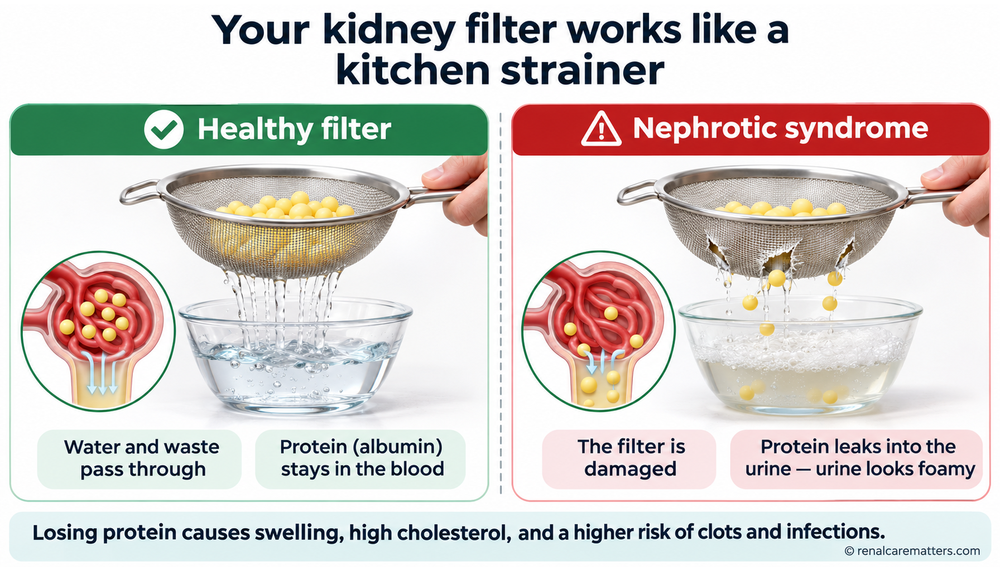
A healthy kidney filter is like a whole strainer: water passes, protein stays. In nephrotic syndrome the strainer tears and protein leaks into the urine.Ang malusog na salaan ng bato ay parang buong salaan: dumadaan ang tubig, naiiwan ang protina. Sa nephrotic syndrome, napupunit ang salaan at tumatagas ang protina sa ihi.Ang himsog nga salaan sa kidney sama sa bug-os nga salaan: moagi ang tubig, magpabilin ang protina. Sa nephrotic syndrome, magisi ang salaan ug motulo ang protina sa ihi.Ing malusug a salaan ning batu anti mo ing buung salaan: lalabas ing danum, maiwan ing protina. King nephrotic syndrome, masiran ing salaan at tutulu ing protina king ilu.
What nephrotic syndrome isAno ang nephrotic syndromeUnsa ang nephrotic syndromeNanu ing nephrotic syndrome
Each kidney holds about a million tiny filters called glomeruli. Think of each one as a fine kitchen strainer: it lets water, salt, and waste pass into the urine but holds back large, useful proteins such as albumin. In nephrotic syndrome the strainer develops leaks, and albumin pours into the urine.Ang bawat bato ay may mga isang milyong maliliit na salaan na tinatawag na glomeruli. Isipin ang bawat isa na parang pinong salaan sa kusina: pinadadaan nito ang tubig, asin, at dumi papunta sa ihi, pero pinipigilan ang malalaki at kapaki-pakinabang na protina gaya ng albumin. Sa nephrotic syndrome, nagkakaroon ng butas ang salaan, kaya bumubuhos ang albumin sa ihi.Ang matag kidney adunay mga usa ka milyon ka gagmay nga salaan nga gitawag og glomeruli. Hunahunaa ang matag usa sama sa pino nga salaan sa kusina: palusoton niini ang tubig, asin, ug hugaw ngadto sa ihi, apan pugngan ang dagko ug mapuslanon nga protina sama sa albumin. Sa nephrotic syndrome, magkabangag ang salaan, busa mobulhot ang albumin ngadto sa ihi.Ing balang batu atin yang metung a milyun a malilit a salaan a aus dang glomeruli. Isipan me ing balang metung a anti mo ing pinung salaan king kusina: palusutan na ing danum, asin, at dake papunta king ilu, pero pigilan na la deng maragul at mapakinabang a protina anti ing albumin. King nephrotic syndrome, magkabutas ing salaan, kaya bubulus ing albumin king ilu.
Doctors call it nephrotic syndrome when four things appear together:Tinatawag itong nephrotic syndrome ng mga doktor kapag sabay-sabay na lumitaw ang apat na bagay:Gitawag kini og nephrotic syndrome sa mga doktor kon dungan nga makita ang upat ka butang:Aus deng nephrotic syndrome deng doktor nung sabay-sabay lang lumitau ing apat a bage:
- Heavy protein in the urine, usually more than 3.5 grams a day in adults. The urine often looks foamy, like beer froth that does not settle.Maraming protina sa ihi, kadalasang higit sa 3.5 gramo bawat araw sa adulto. Madalas mabula ang ihi, parang bula ng beer na hindi nawawala.Daghang protina sa ihi, kasagaran labaw sa 3.5 gramo matag adlaw sa hamtong. Kasagaran bula-bula ang ihi, sama sa bula sa beer nga dili mawala.Dakal a protina king ilu, kalimitan mas maragul king 3.5 gramu balang aldo kareng matua. Malimit a mabulang ing ilu, anti king bula ning beer a e mawala.
- Low blood albumin (hypoalbuminemia).Mababang albumin sa dugo (hypoalbuminemia).Ubos nga albumin sa dugo (hypoalbuminemia).Mababang albumin king daya (hypoalbuminemia).
- Swelling (edema) of the eyelids in the morning, the ankles by evening, and sometimes the belly or the whole body.Pamamaga (edema) ng talukap ng mata sa umaga, ng bukung-bukong sa gabi, at kung minsan ng tiyan o buong katawan.Panghubag (edema) sa tabon sa mata sa buntag, sa buol-buol sa gabii, ug usahay sa tiyan o tibuok lawas.Pamamaga (edema) ning bulbul ning mata king abak, ning bukung-bukung king bengi, at nung kapilan ning atian o ing sablang katawan.
- High cholesterol, because the liver works overtime to replace lost protein and makes extra cholesterol along the way.Mataas na kolesterol, dahil nag-o-overtime ang atay para palitan ang nawalang protina at gumagawa rin ng sobrang kolesterol.Taas nga kolesterol, kay mag-overtime ang atay aron ilisan ang nawala nga protina ug makahimo usab og sobra nga kolesterol.Matas a kolesterol, uli ta ing ate gagawa overtime ban palitan ing mewalang protina at gagawa ya murin sobrang kolesterol.
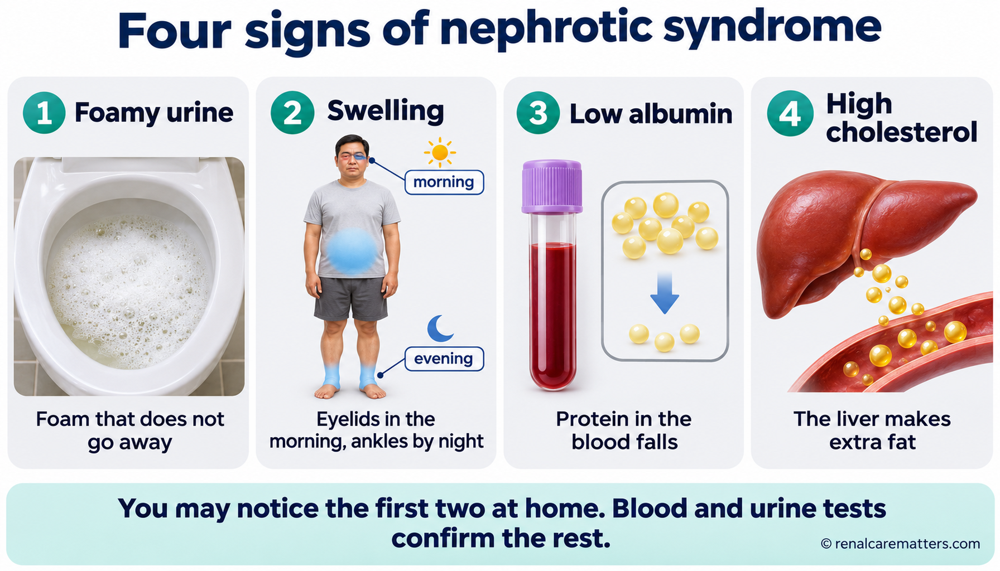
The four signs: foamy urine, swelling, low blood albumin, and high cholesterol. You may notice the first two at home.Ang apat na senyales: mabulang ihi, pamamaga, mababang albumin sa dugo, at mataas na kolesterol. Ang unang dalawa ay maaaring mapansin sa bahay.Ang upat ka timailhan: bula-bula nga ihi, panghubag, ubos nga albumin sa dugo, ug taas nga kolesterol. Ang unang duha mahimong mamatikdan sa balay.Ing apat a tanda: mabulang ilu, pamamaga, mababang albumin king daya, at matas a kolesterol. Ing mumunang adwa malyari mung apansinan king bale.
Why albumin mattersBakit mahalaga ang albuminNganong importante ang albuminNung bakit mayalaga ing albumin
Albumin works like a sponge inside the blood vessels: it holds water in the bloodstream. When albumin falls, water slips out into the tissues. Albumin also carries many medicines and hormones, which is why your doctor may adjust doses while the leak is active.Ang albumin ay parang espongha sa loob ng mga ugat: hinahawakan nito ang tubig sa daluyan ng dugo. Kapag bumaba ang albumin, lumalabas ang tubig papunta sa mga tisyu. Dinadala rin ng albumin ang maraming gamot at hormone, kaya maaaring baguhin ng doktor ang dosis habang aktibo ang pagtagas.Ang albumin sama sa espongha sulod sa mga ugat: kuptan niini ang tubig sa dagan sa dugo. Kon mous-os ang albumin, mogawas ang tubig ngadto sa mga tisyu. Gidala usab sa albumin ang daghang tambal ug hormone, busa basin usbon sa doktor ang dosis samtang aktibo ang pagtulo.Ing albumin anti yang espongha king lub dareng ugat: aawakan na ing danum king daya. Nung mababa ya ing albumin, lumual ya ing danum papunta kareng tisyu. Daralan na murin ing albumin ing dakal a gamut at hormone, kaya malyari nang alilan ning doktor ing dosis kabang aktibu ing pamanulu.
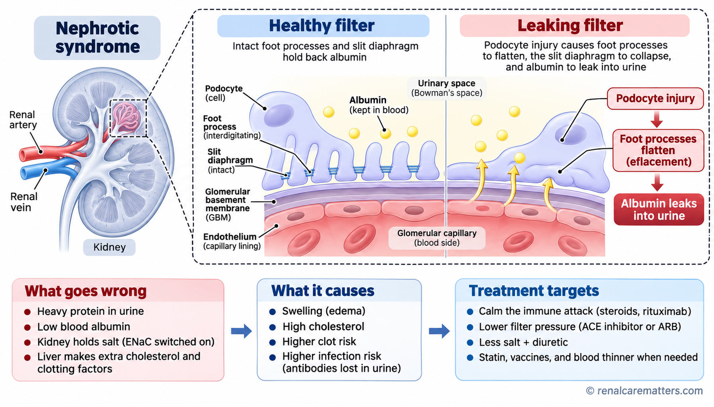
The kidney filter (glomerulus) is lined by podocytes. When podocytes are injured, albumin leaks into the urine, and the body responds with swelling, higher cholesterol, and a greater tendency to clot and to catch infections.Ang salaan ng bato (glomerulus) ay nilalatagan ng mga podocyte. Kapag napinsala ang mga podocyte, tumatagas ang albumin sa ihi, at tumutugon ang katawan sa pamamagitan ng pamamaga, mas mataas na kolesterol, at mas madaling pamumuo ng dugo at pagkakaroon ng impeksiyon.Ang salaan sa kidney (glomerulus) gisapnan sa mga podocyte. Kon madaot ang mga podocyte, motulo ang albumin sa ihi, ug motubag ang lawas pinaagi sa panghubag, mas taas nga kolesterol, ug mas sayon nga pagmuo sa dugo ug pagkaimpeksiyon.Ing salaan ning batu (glomerulus) atin yang latag a podocyte. Nung masira la deng podocyte, tumulu ya ing albumin king ilu, at sasagut ing katawan king pamamaga, mas matas a kolesterol, at mas masalidu a pamibabang daya at pamaka-impeksiyun.
- FSGS
- Focal segmental glomerulosclerosis
- MCD
- Minimal change disease
- MN
- Membranous nephropathy
Why you swell: two mechanisms working togetherBakit ka namamaga: dalawang mekanismong sabay na kumikilosNganong manghubag ka: duha ka mekanismo nga dungan nga molihokNung bakit ka mamaga: adwang mekanismu a sabay a kikilus
Swelling in nephrotic syndrome comes from two processes, and in most people both are at work. Your doctor treats both, which is why the plan includes less salt and water pills, not just one or the other.Ang pamamaga sa nephrotic syndrome ay galing sa dalawang proseso, at sa karamihan ay sabay silang kumikilos. Ginagamot ng doktor ang dalawa, kaya kasama sa plano ang pagbabawas ng asin at ang pampaihi, hindi lang isa.Ang panghubag sa nephrotic syndrome gikan sa duha ka proseso, ug sa kadaghanan dungan sila nga molihok. Tambalan sa doktor ang duha, busa apil sa plano ang pagkunhod sa asin ug ang pampaihi, dili lang usa.Ing pamamaga king nephrotic syndrome manibat king adwang prosesu, at kareng kalakwan sabay lang kikilus. Panamalan ning doktor ing adwa, kaya kayabe king planu ing pamagbawas asin at ing pampailu, e mu metung.
1 · The “leaky sponge” (underfill)1 · Ang “tumutulong espongha” (underfill)1 · Ang “nagtulo nga espongha” (underfill)1 · Ing “tutulung espongha” (underfill)
With less albumin in the blood, the pull that keeps water inside the vessels (oncotic pressure) weakens. Water drifts into the legs, eyelids, and belly. The blood vessels may then feel “underfilled,” which signals the kidney to hold on to salt.Kapag kaunti ang albumin sa dugo, humihina ang hila na nagpapanatili ng tubig sa loob ng ugat (oncotic pressure). Lumilipat ang tubig sa binti, talukap ng mata, at tiyan. Maaaring maramdaman ng mga ugat na “kulang ang laman,” kaya sinasabihan ang bato na magtipid ng asin.Kon gamay ang albumin sa dugo, mohuyang ang bira nga nagpabilin sa tubig sulod sa ugat (oncotic pressure). Mobalhin ang tubig sa bitiis, tabon sa mata, ug tiyan. Basin mobati ang mga ugat nga “kulang ang sulod,” busa sultihan ang kidney nga magtipig og asin.Nung kakaunti ya ing albumin king daya, mangluya ya ing pamanguyud a mamanatili king danum king lub ning ugat (oncotic pressure). Lumipat ya ing danum king bitis, bulbul ning mata, at atian. Malyaring marandaman dareng ugat a “kulang ing laman,” kaya sasabian de ing batu a mamakiramut asin.
2 · The salt-holding kidney (overfill)2 · Ang batong nagtitipid ng asin (overfill)2 · Ang kidney nga nagtipig og asin (overfill)2 · Ing batung mamakiramut asin (overfill)
The leaky filter also lets enzymes into the urine tubes that switch on a salt channel (ENaC). The kidney then keeps salt and water even when the blood vessels are full. This is why salt restriction and diuretics are central to treatment.Pinapapasok din ng tumutulong salaan ang mga enzyme sa mga tubo ng ihi na nagbubukas ng isang daanan ng asin (ENaC). Kaya nagtitipid ang bato ng asin at tubig kahit puno na ang mga ugat. Ito ang dahilan kung bakit mahalaga ang pagbabawas ng asin at ang diuretic.Ang nagtulo nga salaan mosulod usab og mga enzyme sa mga tubo sa ihi nga moabli sa usa ka agianan sa asin (ENaC). Busa magtipig ang kidney og asin ug tubig bisan puno na ang mga ugat. Mao kini ang hinungdan nganong importante ang pagkunhod sa asin ug ang diuretic.Papasukan na murin ning tutulung salaan ing enzyme kareng tubu ning ilu a mamuklat king metung a dalanan ning asin (ENaC). Kaya mamakiramut ya ing batu asin at danum agyang mitmu na la deng ugat. Iti ing sanhi nung bakit mayalaga ing pamagbawas asin at ing diuretic.
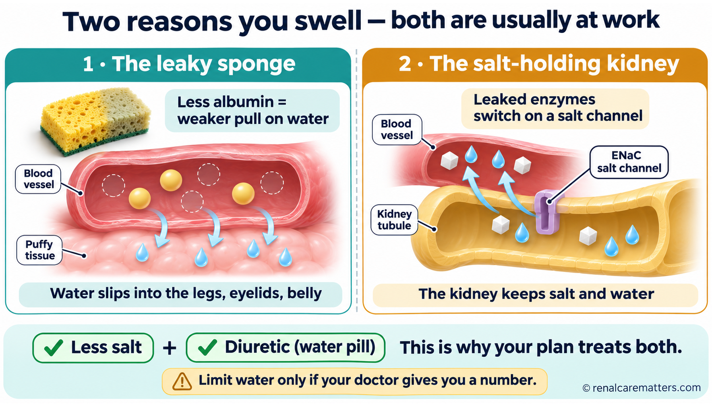
Two causes of swelling usually act together: less albumin to hold water in the vessels, and a kidney that keeps salt. Treatment targets both.Dalawang sanhi ng pamamaga ang kadalasang sabay: kaunting albumin na humahawak ng tubig sa ugat, at batong nagtitipid ng asin. Pareho itong ginagamot.Duha ka hinungdan sa panghubag ang kasagaran dungan: gamay nga albumin nga mokupot sa tubig sa ugat, ug kidney nga nagtipig og asin. Parehong tambalan kini.Adwang sanhi ning pamamaga ing kalimitan sabay: kakaunting albumin a mangawak danum king ugat, at batung mamakiramut asin. Pareu lang panamalan.
- ENaC
- Epithelial sodium channel
Do not restrict water on your ownHuwag basta bawasan ang tubig nang mag-isaAyaw kunhori ang tubig nga ikaw raE mu bawasan ing danum nang ika mu
Cutting salt is safe for nearly everyone. Cutting water is different: some people with very low albumin already have “underfilled” vessels and can faint or injure their kidneys if they drink too little. Limit fluids only if your doctor gives you a number.Ligtas ang pagbabawas ng asin para sa halos lahat. Iba ang pagbabawas ng tubig: ang ilan na napakababa ng albumin ay “kulang na ang laman” ng ugat at maaaring mahimatay o mapinsala ang bato kung masyadong kaunti ang iniinom. Limitahan lang ang inumin kung may ibinigay na numero ang doktor.Luwas ang pagkunhod sa asin alang sa halos tanan. Lahi ang pagkunhod sa tubig: ang uban nga ubos kaayo og albumin “kulang na ang sulod” sa ugat ug mahimong makuyapan o madaot ang kidney kon gamay ra kaayo ang imnon. Limitahi lang ang ilimnon kon naay gihatag nga numero ang doktor.Ligtas ing pamagbawas asin kareng kalakwan. Aliwa ing pamagbawas danum: deng aliwa a makababa ing albumin “kulang ne ing laman” ning ugat at malyaring mapalung o masira ing batu nung kakaunti ing inuman. Limitan mu ing inuman nung atin numerung binie ing doktor.
The three common causes in adultsAng tatlong karaniwang sanhi sa adultoAng tulo ka kasagarang hinungdan sa hamtongIng atlung karaniwan a sanhi kareng matua
Nephrotic syndrome is the doorway; the cause behind it decides treatment. In adults, three causes account for most cases that start in the kidney itself. Diabetes, lupus, amyloidosis, hepatitis, human immunodeficiency virus (HIV), some medicines, and some cancers can produce the same pattern, and your doctor will check for them too.Ang nephrotic syndrome ay pintuan lang; ang sanhi sa likod nito ang magpapasya ng gamutan. Sa mga adulto, tatlong sanhi ang bumubuo sa karamihan ng kaso na nagsisimula sa bato mismo. Ang diabetes, lupus, amyloidosis, hepatitis, HIV, ilang gamot, at ilang kanser ay maaaring magdulot ng parehong pattern, kaya susuriin din ito ng doktor.Ang nephrotic syndrome pultahan lang; ang hinungdan sa likod niini ang modesisyon sa pagtambal. Sa mga hamtong, tulo ka hinungdan ang kadaghanan sa kaso nga nagsugod sa kidney mismo. Ang diabetes, lupus, amyloidosis, hepatitis, HIV, pipila ka tambal, ug pipila ka kanser makahatag usab og samang pattern, busa susihon usab kini sa doktor.Ing nephrotic syndrome pintu mu; ing sanhi king likud na ing mamasya king panamal. Kareng matua, atlung sanhi ing kalakwan dareng kasu a mitutuknang king batu mismu. Ing diabetes, lupus, amyloidosis, hepatitis, HIV, aliwang gamut, at aliwang kanser malyaring dalan ing pareung pattern, kaya suriin na murin iti ning doktor.
| CauseSanhiHinungdanSanhi | Who it usually affectsKaraniwang tinatamaanKasagarang maapektuhanKaraniwan a tatamaan | How it is confirmedPaano kinukumpirmaUnsaon pagkumpirmaMakananu kumpirman | How it usually respondsKaraniwang tugon sa gamutanKasagarang tubag sa pagtambalKaraniwan a sagut king panamal |
|---|---|---|---|
| Minimal change disease (MCD)Minimal change disease (MCD)Minimal change disease (MCD)Minimal change disease (MCD) | The most common cause in children; also frequent in adults. Often starts suddenly.Pinakakaraniwang sanhi sa bata; madalas din sa adulto. Kadalasang biglaan ang simula.Kasagarang hinungdan sa bata; kasagaran usab sa hamtong. Kasagaran kalit ang pagsugod.Pekakaraniwan a sanhi kareng anak; malimit murin kareng matua. Kalimitan bigla ing tuknang. | Kidney biopsy in adults: filters look normal under a light microscope; the damage shows only with an electron microscope.Kidney biopsy sa adulto: mukhang normal ang salaan sa ordinaryong mikroskopyo; sa electron microscope lang makikita ang pinsala.Kidney biopsy sa hamtong: morag normal ang salaan sa ordinaryong mikroskopyo; sa electron microscope ra makita ang kadaot.Kidney biopsy kareng matua: normal ing itsura ning salaan king ordinaryung mikroskopyu; king electron microscope mu akakit ing sira. | Usually responds to steroids within weeks, but relapses are common.Kadalasang tumutugon sa steroid sa loob ng ilang linggo, pero madalas bumalik.Kasagaran motubag sa steroid sulod sa pipila ka semana, apan kasagaran mobalik.Kalimitan sasagut king steroid kilub ning pilan a domingu, pero malimit magbalik. |
| Focal segmental glomerulosclerosis (FSGS)Focal segmental glomerulosclerosis (FSGS)Focal segmental glomerulosclerosis (FSGS)Focal segmental glomerulosclerosis (FSGS) | Any age. Not one disease: an immune form, inherited forms, and “overwork” scarring from obesity, low birth weight, or reduced kidney mass.Kahit anong edad. Hindi iisang sakit: may immune na uri, namamanang uri, at peklat mula sa “sobrang trabaho” dahil sa obesity, mababang timbang sa pagsilang, o kaunting tisyu ng bato.Bisan unsang edad. Dili usa lang ka sakit: adunay immune nga klase, napanunod nga klase, ug samad gikan sa “sobra nga trabaho” tungod sa obesity, ubos nga timbang sa pagkatawo, o gamay nga tisyu sa kidney.Nanumang edad. E metung a sakit: atin immune a klasi, mamanang klasi, at piklat manibat king “sobrang trabaho” uli ning obesity, mababang timbang king pamangibait, o kakaunting tisyu ning batu. | Kidney biopsy shows scarred segments in some filters. Genetic testing helps in selected people.Ipinapakita ng kidney biopsy ang peklat sa ilang bahagi ng ilang salaan. Nakatutulong ang genetic test sa piling tao.Gipakita sa kidney biopsy ang samad sa pipila ka bahin sa pipila ka salaan. Makatabang ang genetic test sa piling tawo.Pakit na ning kidney biopsy ing piklat king aliwang bage dareng aliwang salaan. Makasaup ing genetic test kareng piling tau. | The immune form may respond to steroids or other drugs; inherited and “overwork” forms usually do not and are treated with kidney-protecting care.Maaaring tumugon ang immune na uri sa steroid o ibang gamot; ang namamana at “overwork” na uri ay kadalasang hindi, kaya pinoprotektahan ang bato.Ang immune nga klase mahimong motubag sa steroid o ubang tambal; ang napanunod ug “overwork” nga klase kasagaran dili, busa panalipdan ang kidney.Malyaring sumagut ing immune a klasi king steroid o aliwang gamut; ing mamana at “overwork” a klasi kalimitan e, kaya protektan ing batu. |
| Membranous nephropathy (MN)Membranous nephropathy (MN)Membranous nephropathy (MN)Membranous nephropathy (MN) | A leading cause in adults, often in middle age and later.Pangunahing sanhi sa adulto, madalas sa katamtamang edad pataas.Usa sa nag-unang hinungdan sa hamtong, kasagaran sa tunga nga edad pataas.Pangunang sanhi kareng matua, kalimitan king katamtamang edad paitas. | A blood test for anti-PLA2R (phospholipase A2 receptor) antibodies is positive in about 7 in 10 people; in the right setting it can confirm MN without a biopsy.Positibo ang blood test para sa anti-PLA2R antibodies sa mga 7 sa bawat 10 tao; sa tamang sitwasyon, makukumpirma ang MN kahit walang biopsy.Positibo ang blood test alang sa anti-PLA2R antibodies sa mga 7 sa matag 10 ka tawo; sa saktong sitwasyon, makumpirma ang MN bisan walay biopsy.Positibu ing blood test para king anti-PLA2R antibodies kareng 7 king balang 10 a tau; king tamang sitwasyun, akumpirma ing MN agyang alang biopsy. | About 3 in 10 improve on their own within 6 months. Others need rituximab or other immune treatment.Mga 3 sa 10 ay gumagaling nang kusa sa loob ng 6 na buwan. Ang iba ay nangangailangan ng rituximab o ibang gamot sa immune system.Mga 3 sa 10 mamaayo nga kusa sulod sa 6 ka bulan. Ang uban nagkinahanglan og rituximab o ubang tambal sa immune system.Kareng 3 king 10 mumayap a kusa kilub ning 6 a bulan. Deng aliwa kailangan de ing rituximab o aliwang gamut king immune system. |
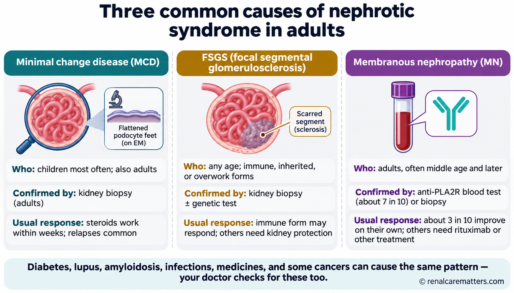
Side-by-side summary of the three common adult causes: who they affect, how they are confirmed, and how they usually respond to treatment.Magkakatabing buod ng tatlong karaniwang sanhi sa adulto: sino ang tinatamaan, paano kinukumpirma, at paano karaniwang tumutugon sa gamutan.Magkatupad nga summary sa tulo ka kasagarang hinungdan sa hamtong: kinsa ang maapektuhan, unsaon pagkumpirma, ug unsaon kasagarang pagtubag sa pagtambal.Magkatabing buud dareng atlung karaniwan a sanhi kareng matua: ninu ing tatamaan, makananu kumpirman, at makananu karaniwan sasagut king panamal.
- MCD
- Minimal change disease
- FSGS
- Focal segmental glomerulosclerosis
- MN
- Membranous nephropathy
- PLA2R
- Phospholipase A2 receptor
These causes can overlapMaaaring magsabay ang mga sanhing itoMahimong magdungan kining mga hinungdanMalyaring magsabay deng sanhi a reti
A 2026 case report described a woman whose minimal change disease returned after 6 years of remission, and a new biopsy showed both scarring (FSGS) and a second, quiet membranous process. If nephrotic syndrome comes back after a long remission, especially in an older adult, your doctor may recommend a new biopsy rather than assume it is the same disease.Isang ulat noong 2026 ang naglarawan ng babaeng bumalik ang minimal change disease matapos ang 6 na taong remission, at ipinakita ng bagong biopsy ang peklat (FSGS) at isa pang tahimik na membranous na proseso. Kung bumalik ang nephrotic syndrome matapos ang mahabang remission, lalo na sa nakatatanda, maaaring irekomenda ng doktor ang bagong biopsy imbes na ipagpalagay na pareho pa rin ang sakit.Usa ka report sa 2026 ang naghulagway sa usa ka babaye nga mibalik ang minimal change disease human sa 6 ka tuig nga remission, ug gipakita sa bag-ong biopsy ang samad (FSGS) ug laing hilom nga membranous nga proseso. Kon mobalik ang nephrotic syndrome human sa taas nga remission, labi na sa tigulang, basin irekomendar sa doktor ang bag-ong biopsy imbes nga isipon nga pareho ra ang sakit.Metung a ulat king 2026 ing mamaglarawan king metung a babai a migbalik ing minimal change disease kaybat ning 6 a banwang remission, at pakit ning bayung biopsy ing piklat (FSGS) at metung pang tahimik a membranous a prosesu. Nung magbalik ing nephrotic syndrome kaybat ning malaun a remission, lalu na kareng matua, malyari nang irekomenda ning doktor ing bayung biopsy kesa isipan a pareu ya mu ing sakit.
The tests and what each one answersAng mga pagsusuri at kung ano ang sinasagot ng bawat isaAng mga pagsusi ug unsa ang gitubag sa matag usaDeng pamanigaral at nanu ing sasagutan da
| TestPagsusuriPagsusiPamanigaral | The question it answersAng tanong na sinasagot nitoAng pangutana nga gitubag niiniIng kutang a sasagutan na |
|---|---|
| Urine protein-to-creatinine ratio (UPCR) or 24-hour urine proteinUrine protein-to-creatinine ratio (UPCR) o 24-oras na protina sa ihiUrine protein-to-creatinine ratio (UPCR) o 24-oras nga protina sa ihiUrine protein-to-creatinine ratio (UPCR) o 24-oras a protina king ilu | How big is the leak, and is it shrinking with treatment?Gaano kalaki ang tagas, at lumiliit ba ito sa gamutan?Unsa kadako ang tulo, ug mokunhod ba kini sa pagtambal?Kanu karagul ing tulu, at lumiit ya ba king panamal? |
| Serum albuminSerum albuminSerum albuminSerum albumin | How much protein is left in the blood? It also guides decisions about clot prevention.Gaano karami ang natitirang protina sa dugo? Gabay rin ito sa pagpapasya tungkol sa pag-iwas sa pamumuo ng dugo.Pila pa ang nahabilin nga protina sa dugo? Giya usab kini sa desisyon bahin sa paglikay sa pagmuo sa dugo.Pilan ing mekakawang protina king daya? Gabay ya murin king pamasya tungkul king pamaglikas king pamibabang daya. |
| Creatinine and eGFR (estimated glomerular filtration rate)Creatinine at eGFR (estimated glomerular filtration rate)Creatinine ug eGFR (estimated glomerular filtration rate)Creatinine at eGFR (estimated glomerular filtration rate) | How well are the kidneys clearing waste?Gaano kahusay naglilinis ng dumi ang bato?Unsa ka maayo naglimpyo og hugaw ang kidney?Kanu kaayus mamalinis dake ing batu? |
| Cholesterol panelCholesterol panelCholesterol panelCholesterol panel | Is the liver over-producing fats, and is a statin needed?Sobra ba ang paggawa ng taba ng atay, at kailangan ba ng statin?Sobra ba ang paghimo og tambok sa atay, ug kinahanglan ba og statin?Sobra ya ba ing pamagawa taba ning ate, at kailangan ya ba ing statin? |
| Anti-PLA2R antibody blood testAnti-PLA2R antibody blood testAnti-PLA2R antibody blood testAnti-PLA2R antibody blood test | Is this membranous nephropathy? Later, is the immune attack switching off?Membranous nephropathy ba ito? Sa kalaunan, humihinto na ba ang pag-atake ng immune system?Membranous nephropathy ba kini? Sa ulahi, mohunong na ba ang pag-atake sa immune system?Membranous nephropathy ya ba iti? Kaybat, tumigil ne ba ing pamanyalakad ning immune system? |
| Screening for hepatitis B and C, HIV, syphilis, tuberculosis, lupus, diabetes, and (by age) cancerScreening para sa hepatitis B at C, HIV, syphilis, tuberculosis, lupus, diabetes, at (ayon sa edad) kanserScreening alang sa hepatitis B ug C, HIV, syphilis, tuberculosis, lupus, diabetes, ug (sumala sa edad) kanserScreening para king hepatitis B at C, HIV, syphilis, tuberculosis, lupus, diabetes, at (agpang king edad) kanser | Is something else driving the leak, and is it safe to suppress the immune system?May iba bang sanhi ng tagas, at ligtas bang pahinain ang immune system?Aduna bay laing hinungdan sa tulo, ug luwas ba nga pahuyangon ang immune system?Atin ya bang aliwang sanhi ing tulu, at ligtas ya bang pangluyan ing immune system? |
| Kidney biopsyKidney biopsyKidney biopsyKidney biopsy | Which disease is it, how much scarring is there, and what will treatment likely achieve?Anong sakit ito, gaano karami ang peklat, at ano ang malamang na makamit ng gamutan?Unsang sakit kini, pila ka daghan ang samad, ug unsa ang lagmit makab-ot sa pagtambal?Nanung sakit iti, kanu kadakal ing piklat, at nanu ing malamang a abut ning panamal? |
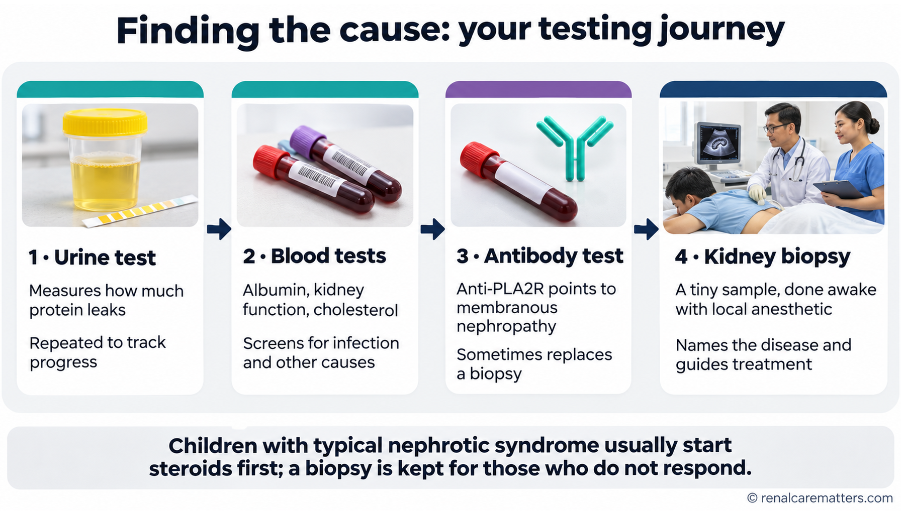
Your testing journey: urine, blood, an antibody test, and, for most adults, a kidney biopsy.Ang iyong mga pagsusuri: ihi, dugo, antibody test, at, para sa karamihan ng adulto, kidney biopsy.Ang imong mga pagsusi: ihi, dugo, antibody test, ug, alang sa kadaghanan sa hamtong, kidney biopsy.Deng pamanigaral mu: ilu, daya, antibody test, at, para king kalakwan kareng matua, kidney biopsy.
- PLA2R
- Phospholipase A2 receptor
Most adults need a kidney biopsy, because minimal change disease and FSGS cannot be told apart by blood tests. The main exception is membranous nephropathy with a positive anti-PLA2R test, where international guidelines say a biopsy is not always required. Children with typical nephrotic syndrome usually start steroids first, and a biopsy or genetic test is reserved for those who do not respond.Karamihan sa adulto ay nangangailangan ng kidney biopsy, dahil hindi kayang paghiwalayin ng blood test ang minimal change disease at FSGS. Ang pangunahing eksepsiyon ay membranous nephropathy na may positibong anti-PLA2R test, kung saan sinasabi ng mga internasyonal na gabay na hindi laging kailangan ang biopsy. Ang mga batang may tipikal na nephrotic syndrome ay kadalasang nagsisimula muna sa steroid, at ang biopsy o genetic test ay para sa mga hindi tumutugon.Kadaghanan sa hamtong nagkinahanglan og kidney biopsy, kay dili mailhan sa blood test ang kalainan sa minimal change disease ug FSGS. Ang pangunang eksepsiyon mao ang membranous nephropathy nga positibo ang anti-PLA2R test, diin ang internasyonal nga mga giya nag-ingon nga dili kanunay kinahanglan ang biopsy. Ang mga bata nga adunay tipikal nga nephrotic syndrome kasagaran magsugod una sa steroid, ug ang biopsy o genetic test alang sa dili motubag.Ing kalakwan kareng matua kailangan de ing kidney biopsy, uli ta e akayan ning blood test pakibatan ing minimal change disease at FSGS. Ing pangunang eksepsiyun ya ing membranous nephropathy a positibu ing anti-PLA2R test, nung nu ing internasyunal a gabay sasabian dang e kailangan pane ing biopsy. Deng anak a atin tipikal a nephrotic syndrome kalimitan mitutuknang muna king steroid, at ing biopsy o genetic test para kareng e sasagut.
New tests that are coming, but not routine yetMga bagong pagsusuri na paparating, pero hindi pa karaniwanMga bag-ong pagsusi nga moabot, apan dili pa naandanDeng bayung pamanigaral a dirindingan, pero e pa karaniwan
Anti-NELL1 (for a second type of membranous nephropathy) and anti-nephrin antibodies (for minimal change disease and some FSGS) were measured in 2026 studies with promising accuracy. These tests are still research tools, have no agreed cutoffs, and are not available in routine Philippine laboratories. Do not delay treatment to look for them.Ang anti-NELL1 (para sa ikalawang uri ng membranous nephropathy) at anti-nephrin antibodies (para sa minimal change disease at ilang FSGS) ay sinukat sa mga pag-aaral noong 2026 na may magandang katumpakan. Mga research tool pa lang ang mga ito, walang napagkasunduang cutoff, at wala pa sa karaniwang laboratoryo sa Pilipinas. Huwag ipagpaliban ang gamutan para hanapin ang mga ito.Ang anti-NELL1 (alang sa ikaduhang klase sa membranous nephropathy) ug anti-nephrin antibodies (alang sa minimal change disease ug pipila ka FSGS) gisukod sa mga pagtuon sa 2026 nga adunay maayong katukma. Mga research tool pa lang kini, walay nauyonan nga cutoff, ug wala pa sa naandan nga laboratoryo sa Pilipinas. Ayaw langana ang pagtambal aron pangitaon kini.Ing anti-NELL1 (para king kaduang klasi ning membranous nephropathy) at anti-nephrin antibodies (para king minimal change disease at aliwang FSGS) sinukat de kareng pag-aral king 2026 a atin mayap a katumpakan. Research tool pa la mu reti, alang pinagkasunduan a cutoff, at ala pa kareng karaniwan a laboratoryu king Pilipinas. E me ipagpaliban ing panamal ban panintunan la reti.
Treatment: calm the immune attack, protect the filterGamutan: pakalmahin ang atake ng immune system, protektahan ang salaanPagtambal: pakalmaha ang atake sa immune system, panalipdi ang salaanPanamal: pakalmalan ing pamanyalakad ning immune system, protektan ing salaan
Treatment has two layers. Supportive care protects the filter and the body in every type of nephrotic syndrome. Immune treatment switches off the attack in the types where the immune system is the cause.May dalawang patong ang gamutan. Ang supportive care ay nagpoprotekta sa salaan at sa katawan sa lahat ng uri ng nephrotic syndrome. Ang immune treatment ay nagpapahinto sa atake sa mga uri kung saan ang immune system ang sanhi.Adunay duha ka lut-od ang pagtambal. Ang supportive care nanalipod sa salaan ug sa lawas sa tanang klase sa nephrotic syndrome. Ang immune treatment mopahunong sa atake sa mga klase diin ang immune system ang hinungdan.Atin yang adwang patung ing panamal. Ing supportive care protektan na ing salaan at ing katawan king sablang klasi ning nephrotic syndrome. Ing immune treatment patigil na ing pamanyalakad kareng klasi nung nu ing immune system ing sanhi.
Supportive care (almost everyone)Supportive care (halos lahat)Supportive care (halos tanan)Supportive care (malapit kareng sablang tau)
- An ACE (angiotensin-converting enzyme) inhibitor or ARB (angiotensin II receptor blocker) (for example, losartan) lowers the pressure inside the filter and reduces the leak.ACE inhibitor o ARB (halimbawa, losartan) ay nagpapababa ng presyon sa loob ng salaan at nagbabawas ng tagas.ACE inhibitor o ARB (pananglitan, losartan) mopaubos sa presyon sulod sa salaan ug mokunhod sa tulo.ACE inhibitor o ARB (alimbawa, losartan) pababan na ing presyun king lub ning salaan at bawasan na ing tulu.
- Less salt (aim for under 2 grams of sodium a day) so that water pills can work.Bawasan ang asin (layuning wala pang 2 gramo ng sodium bawat araw) para gumana ang pampaihi.Kunhori ang asin (tumong nga ubos sa 2 gramo nga sodium matag adlaw) aron molihok ang pampaihi.Bawasan ing asin (pakay a kulang king 2 gramu a sodium balang aldo) ban gumana ing pampailu.
- A diuretic (such as furosemide) to remove extra fluid. Weigh yourself every morning.Diuretic (gaya ng furosemide) para alisin ang sobrang tubig. Timbangin ang sarili tuwing umaga.Diuretic (sama sa furosemide) aron kuhaon ang sobra nga tubig. Timbanga ang kaugalingon matag buntag.Diuretic (anti ing furosemide) ban alisan ing sobrang danum. Timbangan me ing sarili mu balang abak.
- A statin when cholesterol stays high, especially if the leak is not resolving quickly.Statin kapag nananatiling mataas ang kolesterol, lalo na kung hindi agad gumagaling ang tagas.Statin kon magpabilin nga taas ang kolesterol, labi na kon dili dayon maayo ang tulo.Statin nung manatiling matas ing kolesterol, lalu na nung e la agad mayap ing tulu.
- A blood thinner for some people, mainly those with membranous nephropathy and very low albumin, after weighing the risk of bleeding.Pampalabnaw ng dugo para sa ilan, lalo na sa may membranous nephropathy at napakababang albumin, matapos timbangin ang panganib ng pagdurugo.Pampanipis sa dugo alang sa pipila, labi na sa adunay membranous nephropathy ug ubos kaayo nga albumin, human timbangon ang peligro sa pagdugo.Pampalabnaw daya para kareng aliwa, lalu na kareng atin membranous nephropathy at makababang albumin, kaybat dang timbangan ing panganib ning pamagdaya.
- Vaccines: pneumococcal, yearly influenza (for you and your household), and shingles vaccine, ideally before strong immune treatment begins.Bakuna: pneumococcal, taunang influenza (para sa iyo at sa kasama sa bahay), at bakuna sa shingles, mas mainam bago magsimula ang malakas na immune treatment.Bakuna: pneumococcal, tinuig nga influenza (alang kanimo ug sa kauban sa balay), ug bakuna sa shingles, mas maayo sa dili pa magsugod ang kusog nga immune treatment.Bakuna: pneumococcal, banwa-banwang influenza (para keka at kareng kayabe mu king bale), at bakuna king shingles, mas mayap bayu mituknang ing makusug a immune treatment.
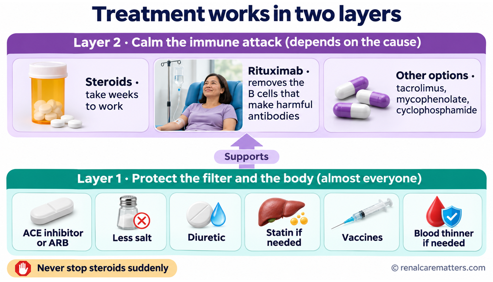
Treatment has two layers: protection for everyone, and immune treatment chosen by the cause.May dalawang patong ang gamutan: proteksiyon para sa lahat, at immune treatment na pinipili ayon sa sanhi.Adunay duha ka lut-od ang pagtambal: proteksiyon alang sa tanan, ug immune treatment nga gipili sumala sa hinungdan.Atin adwang patung ing panamal: proteksiyun para kareng sablang tau, at immune treatment a pipiliin agpang king sanhi.
- ACE
- Angiotensin-converting enzyme
- ARB
- Angiotensin II receptor blocker
Immune treatment (depends on the cause)Immune treatment (depende sa sanhi)Immune treatment (depende sa hinungdan)Immune treatment (agpang king sanhi)
Steroids (prednisone or prednisolone) are the first treatment for minimal change disease and the immune form of FSGS. They take weeks to work, because the immune cells driving the attack need time to quiet down and the podocytes need time to rebuild. Side effects to watch include high blood sugar, raised blood pressure, mood and sleep changes, stomach upset, weight gain, and infections. Never stop steroids suddenly; your doctor will taper them.Ang steroid (prednisone o prednisolone) ang unang gamot sa minimal change disease at sa immune na uri ng FSGS. Inaabot ito ng ilang linggo bago umepekto, dahil kailangan ng panahon para kumalma ang mga immune cell na umaatake at para muling mabuo ang mga podocyte. Bantayan ang mataas na asukal sa dugo, pagtaas ng presyon, pagbabago sa mood at tulog, sakit ng tiyan, pagtaba, at impeksiyon. Huwag kailanman biglang ihinto ang steroid; unti-unti itong babawasan ng doktor.Ang steroid (prednisone o prednisolone) ang unang tambal sa minimal change disease ug sa immune nga klase sa FSGS. Modugay kini og pipila ka semana sa dili pa molihok, kay kinahanglan og panahon aron mokalma ang mga immune cell nga moatake ug aron matukod pag-usab ang mga podocyte. Bantayi ang taas nga asukal sa dugo, pagsaka sa presyon, kausaban sa mood ug tulog, sakit sa tiyan, pagtambok, ug impeksiyon. Ayaw gayud kalit nga hunonga ang steroid; hinay-hinay kining kunhoran sa doktor.Ing steroid (prednisone o prednisolone) ya ing mumunang gamut king minimal change disease at king immune a klasi ning FSGS. Tatagal yang pilan a domingu bayu gumana, uli ta kailangan da ing panaun deng immune cell a manyalakad ban kumalma at deng podocyte ban mibayu. Bantayan ing matas a asukal king daya, pamitaas ning presyun, pamagbayu ning mood at tudtud, sakit ning atian, pamagmataba, at impeksiyun. E me bigla-biglang patigilan ing steroid; dahan-dahan neng bawasan ning doktor.
Rituximab is an infusion that removes B cells, the immune cells that make the harmful antibodies. It is a main treatment for membranous nephropathy and is used in minimal change disease that keeps relapsing. Before rituximab, you will be tested for hepatitis B, because the drug can reawaken a hidden infection. Other options include tacrolimus or cyclosporine (calcineurin inhibitors), mycophenolate, cyclophosphamide, and, in 2026, a newer B-cell drug called obinutuzumab.Ang rituximab ay isang infusion na nag-aalis ng B cell, ang mga immune cell na gumagawa ng mapanganib na antibody. Pangunahing gamot ito sa membranous nephropathy at ginagamit sa minimal change disease na paulit-ulit bumabalik. Bago ang rituximab, susuriin ka para sa hepatitis B, dahil maaaring gisingin ng gamot ang nakatagong impeksiyon. Kabilang sa iba pang opsiyon ang tacrolimus o cyclosporine (calcineurin inhibitors), mycophenolate, cyclophosphamide, at, noong 2026, isang mas bagong B-cell na gamot na tinatawag na obinutuzumab.Ang rituximab usa ka infusion nga mokuha sa B cell, ang mga immune cell nga naghimo sa makadaot nga antibody. Pangunang tambal kini sa membranous nephropathy ug gigamit sa minimal change disease nga balik-balik nga mobalik. Sa dili pa ang rituximab, susihon ka alang sa hepatitis B, kay ang tambal mahimong mopukaw sa natago nga impeksiyon. Apil sa ubang kapilian ang tacrolimus o cyclosporine (calcineurin inhibitors), mycophenolate, cyclophosphamide, ug, sa 2026, usa ka mas bag-ong B-cell nga tambal nga gitawag og obinutuzumab.Ing rituximab metung yang infusion a mag-alis B cell, deng immune cell a gagawa king mapanganib a antibody. Pangunang gamut ya iti king membranous nephropathy at gagamitan de king minimal change disease a magbalik-balik. Bayu ing rituximab, suriin da ka para king hepatitis B, uli ta malyari nang gisingan ning gamut ing makasalikut a impeksiyun. Kayabe kareng aliwang opsiyun ing tacrolimus o cyclosporine (calcineurin inhibitors), mycophenolate, cyclophosphamide, at, king 2026, metung a mas bayung B-cell a gamut a aus dang obinutuzumab.
Before immune treatment starts, ask aboutBago magsimula ang immune treatment, itanong ang tungkol saSa dili pa magsugod ang immune treatment, pangutan-a bahin saBayu mituknang ing immune treatment, kutnan me tungkul king
Hepatitis B and tuberculosis (TB) screening; vaccines; a stomach-protecting medicine and bone protection if you will take steroids for months; a preventive antibiotic (trimethoprim–sulfamethoxazole) against Pneumocystis pneumonia during high-dose treatment; and deworming or a Strongyloides test if you grew up in a rural or farming area, because steroids can make a hidden worm infection spread.Screening sa hepatitis B at tuberculosis; bakuna; gamot na nagpoprotekta sa sikmura at sa buto kung ilang buwan kang magsi-steroid; pang-iwas na antibiotic (trimethoprim–sulfamethoxazole) laban sa Pneumocystis pneumonia habang mataas ang dosis ng gamutan; at pampurga o Strongyloides test kung lumaki ka sa probinsiya o bukid, dahil maaaring ikalat ng steroid ang nakatagong bulate.Screening sa hepatitis B ug tuberculosis; bakuna; tambal nga manalipod sa tiyan ug sa bukog kon pila ka bulan kang mag-steroid; panglikay nga antibiotic (trimethoprim–sulfamethoxazole) batok sa Pneumocystis pneumonia samtang taas ang dosis sa pagtambal; ug pampurga o Strongyloides test kon midako ka sa probinsiya o umahan, kay ang steroid mahimong mokaylap sa natago nga bitok.Screening king hepatitis B at tuberculosis; bakuna; gamut a protektan na ing tiyan at butu nung pilan a bulan kang mag-steroid; pamaglikas a antibiotic (trimethoprim–sulfamethoxazole) laban king Pneumocystis pneumonia kabang matas ing dosis ning panamal; at pampurga o Strongyloides test nung meragul ka king baryu o bukid, uli ta malyari nang ipakalat ning steroid ing makasalikut a bulati.
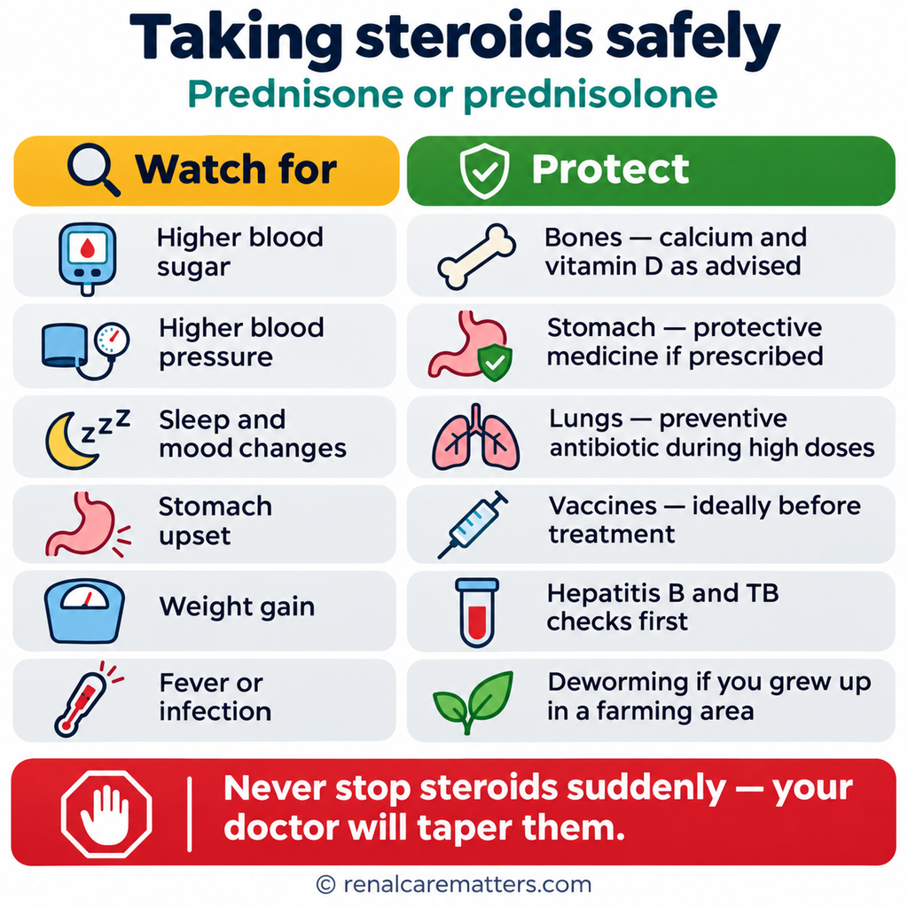
A card to keep on the fridge while you take steroids.Isang card na ilalagay sa ref habang umiinom ka ng steroid.Usa ka card nga ibutang sa ref samtang nag-inom ka og steroid.Metung a card a ibili king ref kabang uminum kang steroid.
- TB
- Tuberculosis
Can a lower steroid dose work? A 2026 trialGagana ba ang mas mababang dosis ng steroid? Isang pag-aaral noong 2026Molihok ba ang mas ubos nga dosis sa steroid? Usa ka pagtuon sa 2026Gumana ya ba ing mas mababang dosis ning steroid? Metung a pag-aral king 2026
Standard treatment for adult minimal change disease is a high steroid dose, about 1 mg per kilogram of body weight each day. It works in more than 8 in 10 people, but the side effects are real. In the ADAPT (Active Vitamin D And Reduced Dose Prednisolone for Treatment in Minimal Change Nephropathy) trial from Denmark, published in 2026, 67 adults were randomly assigned to half that dose plus a small dose of activated vitamin D (alfacalcidol), or to the standard dose.Ang karaniwang gamutan sa minimal change disease ng adulto ay mataas na dosis ng steroid, mga 1 mg bawat kilo ng timbang bawat araw. Gumagana ito sa higit 8 sa 10 tao, pero totoo ang mga side effect. Sa ADAPT trial mula Denmark, na inilathala noong 2026, 67 adulto ang random na itinalaga sa kalahati ng dosis na iyon kasama ang maliit na dosis ng activated vitamin D (alfacalcidol), o sa karaniwang dosis.Ang naandan nga pagtambal sa minimal change disease sa hamtong mao ang taas nga dosis sa steroid, mga 1 mg matag kilo sa timbang matag adlaw. Molihok kini sa labaw sa 8 sa 10 ka tawo, apan tinuod ang mga side effect. Sa ADAPT trial gikan sa Denmark, nga gipatik sa 2026, 67 ka hamtong ang random nga gibutang sa katunga sa maong dosis uban ang gamay nga dosis sa activated vitamin D (alfacalcidol), o sa naandan nga dosis.Ing karaniwan a panamal king minimal change disease kareng matua ya ing matas a dosis ning steroid, kareng 1 mg balang kilu ning timbang balang aldo. Gumagana ya kareng mas maragul king 8 king 10 a tau, pero tutu deng side effect. King ADAPT trial manibat Denmark, a pepalwal king 2026, 67 a matua ing random a mibie king kalati ning dosis a ita kayabe ing malating dosis ning activated vitamin D (alfacalcidol), o king karaniwan a dosis.
ADAPT (Denmark, 67 adults with minimal change disease): remission rates were close, and the lower-dose group took less than half the total steroid, but the trial could not formally prove the lower dose is “as good.”ADAPT (Denmark, 67 adulto na may minimal change disease): magkalapit ang remission, at wala pang kalahati ng kabuuang steroid ang ininom ng lower-dose group, pero hindi pormal na napatunayan ng pag-aaral na “kasinghusay” ang mas mababang dosis.ADAPT (Denmark, 67 ka hamtong nga adunay minimal change disease): duol ang remission, ug ubos sa katunga sa kinatibuk-ang steroid ang giinom sa lower-dose group, apan wala pormal nga napamatud-an sa pagtuon nga “parehas ka maayo” ang mas ubos nga dosis.ADAPT (Denmark, 67 a matua a atin minimal change disease): malapit ing remission, at kulang king kalati ning sablang steroid ing ininum ning lower-dose group, pero e pormal a apatunayan ning pag-aral a “kasing-mayap” ing mas mababang dosis.
- ADAPT
- Active Vitamin D And Reduced Dose Prednisolone for Treatment in Minimal Change Nephropathy trial
- Remission within 16 weeks: 88% with the lower dose versus 91% with the standard dose. Remission took about 4 weeks in both groups, and about 1 in 3 relapsed in each group.Remission sa loob ng 16 na linggo: 88% sa mas mababang dosis kumpara sa 91% sa karaniwang dosis. Mga 4 na linggo bago nag-remission sa dalawang grupo, at mga 1 sa 3 ang bumalik ang sakit sa bawat grupo.Remission sulod sa 16 ka semana: 88% sa mas ubos nga dosis batok sa 91% sa naandan nga dosis. Mga 4 ka semana sa dili pa nag-remission sa duha ka grupo, ug mga 1 sa 3 ang mibalik ang sakit sa matag grupo.Remission kilub ning 16 a domingu: 88% king mas mababang dosis kumpara king 91% king karaniwan a dosis. Kareng 4 a domingu bayu nag-remission king adwang grupu, at kareng 1 king 3 ing migbalik ing sakit king balang grupu.
- Total steroid taken: 3.7 g versus 8.0 g. Serious side effects were fewer (6 versus 13 events), and steroid toxicity scores were lower.Kabuuang steroid na ininom: 3.7 g kumpara sa 8.0 g. Mas kaunti ang malubhang side effect (6 kumpara sa 13), at mas mababa ang score ng toxicity ng steroid.Kinatibuk-ang steroid nga giinom: 3.7 g batok sa 8.0 g. Mas gamay ang grabe nga side effect (6 batok sa 13), ug mas ubos ang score sa toxicity sa steroid.Sablang steroid a ininum: 3.7 g kumpara king 8.0 g. Mas kakaunti ing malalang side effect (6 kumpara king 13), at mas mababa ing score ning toxicity ning steroid.
The honest bottom lineAng tapat na konklusyonAng matinud-anon nga konklusyonIng tapat a konklusyun
The trial was small, unblinded, and included only White Danish adults, and the result fell just short of the bar it set to prove the lower dose is “as good.” It is a promising option to discuss, especially for people at high risk of steroid harm such as those with diabetes or osteoporosis, but it is not a reason to change your own dose. Your doctor decides the dose with you.Maliit ang pag-aaral, hindi blinded, at mga puting adulto lang sa Denmark ang kasama, at bahagyang hindi naabot ng resulta ang pamantayang itinakda nito para patunayang “kasinghusay” ang mas mababang dosis. Isa itong magandang opsiyon na pag-usapan, lalo na sa mga mataas ang panganib sa pinsala ng steroid gaya ng may diabetes o osteoporosis, pero hindi ito dahilan para baguhin ang sarili mong dosis. Ang doktor ang magpapasya ng dosis kasama mo.Gamay ang pagtuon, dili blinded, ug mga puti nga hamtong lang sa Denmark ang nalakip, ug gamay nga wala makaabot ang resulta sa sukdanan nga gibutang niini aron mapamatud-an nga “parehas ka maayo” ang mas ubos nga dosis. Usa kini ka maayong kapilian nga hisgutan, labi na sa taas og peligro sa kadaot sa steroid sama sa adunay diabetes o osteoporosis, apan dili kini rason aron usbon ang imong kaugalingong dosis. Ang doktor ang modesisyon sa dosis uban kanimo.Malati ing pag-aral, e blinded, at deng maputing matua mu king Denmark ing kayabe, at medyu e meabut ning resulta ing pamantayan a pepalagyu na ban patunayan a “kasing-mayap” ing mas mababang dosis. Metung yang mayap a opsiyun a pisasabian, lalu na kareng matas ing panganib king sira ning steroid anti kareng atin diabetes o osteoporosis, pero e iti sanhi ban alilan me ing sarili mung dosis. Ing doktor ing mamasya king dosis kayabe ka.
Spotting a relapse earlyMaagang pagtukoy ng pagbabalik ng sakitSayo nga pag-ila sa pagbalik sa sakitMaagang pamanakit king pamagbalik ning sakit
About half of adults with minimal change disease relapse at least once, and membranous nephropathy can return months or years later. A relapse caught early is easier to treat, and often needs a shorter course.Mga kalahati ng adultong may minimal change disease ang bumabalik ang sakit kahit isang beses, at maaaring bumalik ang membranous nephropathy pagkalipas ng ilang buwan o taon. Mas madaling gamutin ang maagang natukoy na pagbabalik, at kadalasang mas maikli ang kailangang gamutan.Mga katunga sa hamtong nga adunay minimal change disease ang mobalik ang sakit bisan kausa, ug ang membranous nephropathy mahimong mobalik human sa pipila ka bulan o tuig. Mas sayon tambalan ang sayo nga nailhan nga pagbalik, ug kasagaran mas mubo ang kinahanglan nga pagtambal.Kareng kalati kareng matua a atin minimal change disease ing magbalik ing sakit agyang misan, at malyaring magbalik ing membranous nephropathy kaybat ning pilan a bulan o banwa. Mas masalidu panamalan ing maagang akit a pamagbalik, at kalimitan mas maikli ing kailangan a panamal.
Watch forBantayan angBantayi angBantayan ing
- Foamy urine that returns and lasts several daysMabulang ihi na bumabalik at tumatagal ng ilang arawBula-bula nga ihi nga mobalik ug molungtad og pipila ka adlawMabulang ilu a magbalik at tatagal pilan aldo
- Puffy eyelids on waking, tight shoes or rings, sock marks by eveningNamamagang talukap ng mata paggising, masikip na sapatos o singsing, bakas ng medyas sa gabiHubag nga tabon sa mata pagmata, hugot nga sapatos o singsing, marka sa medyas sa gabiiMamagang bulbul ning mata pamagmulat, masikip a sapatus o singsing, bakas ning medyas king bengi
- Weight up by 1 to 2 kg over a few days without eating morePagtaas ng timbang ng 1 hanggang 2 kg sa loob ng ilang araw nang hindi kumakain nang mas maramiPagsaka sa timbang og 1 hangtod 2 kg sulod sa pipila ka adlaw nga wala mokaon og mas daghanPamitaas ning timbang 1 angga 2 kg kilub ning pilan aldo agyang e ka mamangan mas dakal
- A home urine dipstick reading of 2+ or more on several mornings, if your doctor uses this method with youHome urine dipstick na 2+ o higit sa ilang umaga, kung ginagamit ng doktor ang paraang itoHome urine dipstick nga 2+ o labaw sa pipila ka buntag, kon gigamit sa doktor kini nga paagiHome urine dipstick a 2+ o mas maragul king pilan abak, nung gagamitan ning doktor ing paralan a iti
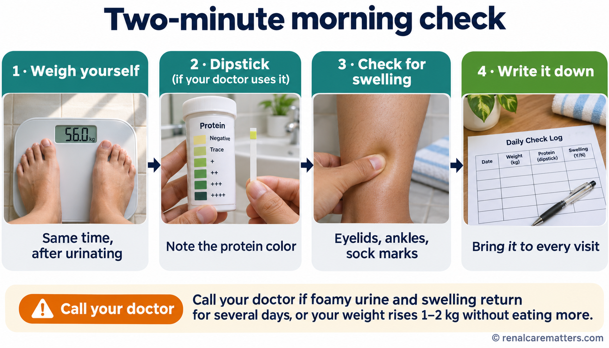
A two-minute morning routine that catches a relapse early.Isang dalawang-minutong gawain tuwing umaga para maagang matukoy ang pagbabalik ng sakit.Usa ka duha-ka-minutong buhat matag buntag aron sayo nga mailhan ang pagbalik sa sakit.Metung a adwang-minutung gawa balang abak ban maagang akit ing pamagbalik ning sakit.
Keep a simple log: date, morning weight, dipstick result, and any swelling. Bring it to every visit. Your doctor may also repeat the anti-PLA2R blood test in membranous nephropathy, because the antibody often rises before protein returns to the urine.Magtala nang simple: petsa, timbang sa umaga, resulta ng dipstick, at anumang pamamaga. Dalhin ito sa bawat check-up. Maaari ring ulitin ng doktor ang anti-PLA2R blood test sa membranous nephropathy, dahil kadalasang tumataas ang antibody bago bumalik ang protina sa ihi.Paghimo og simple nga talaan: petsa, timbang sa buntag, resulta sa dipstick, ug bisan unsang panghubag. Dad-a kini sa matag check-up. Mahimo usab nga usbon sa doktor ang anti-PLA2R blood test sa membranous nephropathy, kay kasagaran mosaka ang antibody sa dili pa mobalik ang protina sa ihi.Magsulat simple: petsa, timbang king abak, resulta ning dipstick, at nanumang pamamaga. Darang me iti king balang check-up. Malyari na murin ulitan ning doktor ing anti-PLA2R blood test king membranous nephropathy, uli ta kalimitan tumaas ing antibody bayu magbalik ing protina king ilu.
Food, fluids, activity, and family planningPagkain, inumin, gawain, at pagpaplano ng pamilyaPagkaon, ilimnon, kalihokan, ug pagplano sa pamilyaPamangan, inuman, gawa, at pamaplanu ning pamilya
- Salt: the single most useful change. Go easy on patis, toyo, bagoong, instant noodles, canned and processed meats, and salty snacks. Use calamansi, garlic, onion, ginger, and herbs for flavor.Asin: ang pinakamahalagang pagbabago. Bawasan ang patis, toyo, bagoong, instant noodles, de-lata at processed na karne, at maaalat na sitsirya. Gumamit ng calamansi, bawang, sibuyas, luya, at herbs para sa lasa.Asin: ang labing mapuslanon nga kausaban. Hinay-hinay sa patis, toyo, ginamos, instant noodles, de-lata ug processed nga karne, ug parat nga sitsirya. Gamita ang calamansi, ahos, sibuyas, luy-a, ug herbs alang sa lami.Asin: ing pekamayalagang pamagbayu. Bawasan ing patis, toyo, bagoong, instant noodles, de-lata at processed a karni, at maalat a sitsirya. Gamitan ing kalamansi, bawang, sibuyas, luya, at herbs para king lasa.
- Protein: eat a normal amount. A high-protein diet does not raise blood albumin in nephrotic syndrome and may increase the leak. Ask a renal dietitian if you are losing weight or muscle.Protina: kumain ng normal na dami. Hindi itinataas ng high-protein diet ang albumin sa dugo sa nephrotic syndrome at maaaring madagdagan pa ang tagas. Magtanong sa renal dietitian kung pumapayat ka o nawawalan ng kalamnan.Protina: pagkaon og normal nga gidaghanon. Ang high-protein diet dili mopataas sa albumin sa dugo sa nephrotic syndrome ug mahimong modugang sa tulo. Pangutana sa renal dietitian kon niniwang ka o nawad-an og kaunoran.Protina: mangan normal a kadakal. E pataasan ning high-protein diet ing albumin king daya king nephrotic syndrome at malyari nang dagdagan ing tulu. Kutnan me ing renal dietitian nung lalanat ka o mawawalan laman.
- Fluids: drink normally unless your doctor gives you a limit.Inumin: uminom nang normal maliban kung may limitasyong ibinigay ang doktor.Ilimnon: pag-inom og normal gawas kon adunay limitasyon nga gihatag sa doktor.Inuman: uminum normal, liban nung atin limitasyun a binie ing doktor.
- Movement: walk daily and avoid long periods sitting still, especially on long trips, to lower the risk of clots.Paggalaw: maglakad araw-araw at iwasan ang matagal na pag-upo, lalo na sa mahabang biyahe, para mabawasan ang panganib ng pamumuo ng dugo.Paglihok: paglakaw adlaw-adlaw ug likayi ang dugay nga paglingkod, labi na sa taas nga biyahe, aron makunhoran ang peligro sa pagmuo sa dugo.Pamagkilus: lumakad aldo-aldo at likasan ing malaun a pamagtuknung, lalu na king malayu a biyahe, ban mabawasan ing panganib ning pamibabang daya.
- Infection care: wash hands, keep vaccinations current, and treat skin wounds early. Fever while on steroids or rituximab needs a call to your doctor the same day.Pag-iwas sa impeksiyon: maghugas ng kamay, panatilihing updated ang bakuna, at gamutin agad ang sugat sa balat. Ang lagnat habang nagsi-steroid o rituximab ay nangangailangan ng tawag sa doktor sa parehong araw.Paglikay sa impeksiyon: panghunaw sa kamot, ipabilin nga updated ang bakuna, ug tambali dayon ang samad sa panit. Ang hilanat samtang nag-steroid o rituximab nagkinahanglan og tawag sa doktor sa samang adlaw.Pamaglikas king impeksiyun: manugas gamat, panatilian a updated ing bakuna, at panamalan agad ing sugat king balat. Ing lagnat kabang mag-steroid o rituximab kailangan yang tawagan ing doktor king pareung aldo.
- Medicines to avoid: pain relievers such as ibuprofen, mefenamic acid, and naproxen (NSAIDs) can worsen swelling and kidney function. Avoid herbal or “detox” products, including alpha-lipoic acid supplements, unless your doctor agrees.Mga gamot na dapat iwasan: ang mga pain reliever gaya ng ibuprofen, mefenamic acid, at naproxen (NSAIDs) ay maaaring magpalala ng pamamaga at ng paggana ng bato. Iwasan ang herbal o “detox” na produkto, kabilang ang alpha-lipoic acid supplement, maliban kung pumayag ang doktor.Mga tambal nga likayan: ang mga pain reliever sama sa ibuprofen, mefenamic acid, ug naproxen (NSAIDs) mahimong mopagrabe sa panghubag ug sa paglihok sa kidney. Likayi ang herbal o “detox” nga produkto, apil ang alpha-lipoic acid supplement, gawas kon mouyon ang doktor.Deng gamut a dapat likasan: deng pain reliever anti ing ibuprofen, mefenamic acid, at naproxen (NSAIDs) malyari dang palalan ing pamamaga at ing pamagobra ning batu. Likasan ing herbal o “detox” a produktu, kayabe ing alpha-lipoic acid supplement, liban nung pumayag ing doktor.
- Pregnancy: plan it with your nephrologist. Several treatments (such as mycophenolate, cyclophosphamide, and ACE inhibitors or ARBs) must be stopped or switched before conception. See the guide on kidney disease and pregnancy.Pagbubuntis: planuhin ito kasama ang nephrologist. Ilang gamot (gaya ng mycophenolate, cyclophosphamide, at ACE inhibitor o ARB) ang kailangang ihinto o palitan bago magbuntis. Tingnan ang gabay sa sakit sa bato at pagbubuntis.Pagmabdos: planoha kini uban sa nephrologist. Pipila ka tambal (sama sa mycophenolate, cyclophosphamide, ug ACE inhibitor o ARB) kinahanglan hunongon o ilisan sa dili pa magmabdos. Tan-awa ang giya sa sakit sa kidney ug pagmabdos.Pamagdalang tian: planuan ye kayabe ing nephrologist. Aliwang gamut (anti ing mycophenolate, cyclophosphamide, at ACE inhibitor o ARB) kailangan dang patigilan o alilan bayu magdalang tian. Lawen ing gabay king sakit king batu at pamagdalang tian.
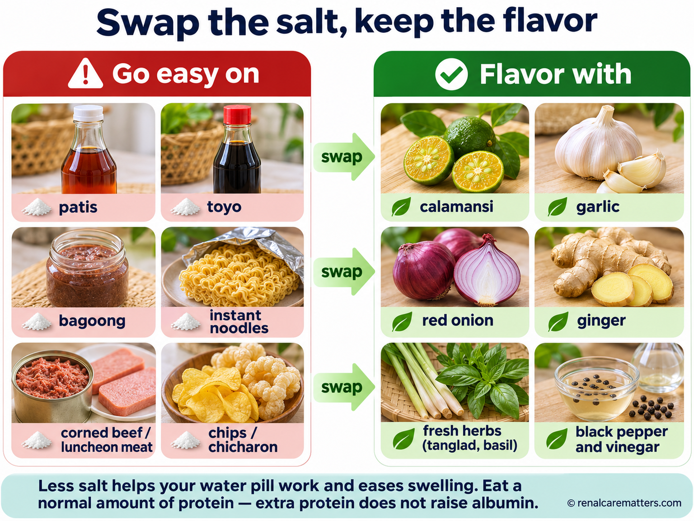
Swap hidden salt for calamansi, garlic, onion, ginger, and herbs.Palitan ang nakatagong asin ng calamansi, bawang, sibuyas, luya, at herbs.Ilisi ang natago nga asin og calamansi, ahos, sibuyas, luy-a, ug herbs.Alilan ing makasalikut a asin king kalamansi, bawang, sibuyas, luya, at herbs.
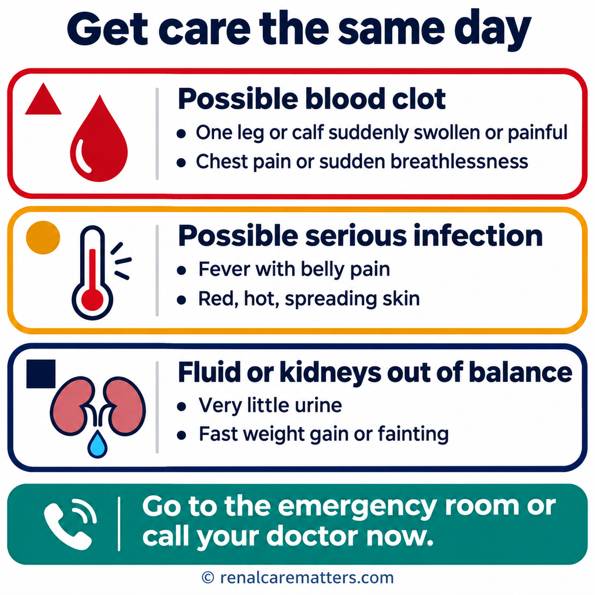
Warning signs that need care the same day.Mga babalang nangangailangan ng pagpapatingin sa parehong araw.Mga timailhan nga nagkinahanglan og pagpatan-aw sa samang adlaw.Deng babala a kailangan magpatingin king pareung aldo.
Questions to bring to your doctorMga tanong na dadalhin sa doktorMga pangutana nga dad-on sa doktorDeng kutang a darang king doktor
Tick the questions you want to ask, then copy or print your list.Lagyan ng tsek ang mga tanong na gusto mong itanong, saka kopyahin o i-print ang listahan.Markahi ang mga pangutana nga gusto nimong ipangutana, unya kopyaha o i-print ang listahan.Markan me deng kutang a buri mung kutnan, kaybat kopyan o i-print me ing listahan.
Common questionsMga karaniwang tanongMga kasagarang pangutanaDeng karaniwan a kutang
Is nephrotic syndrome a kind of cancer?Isang uri ba ng kanser ang nephrotic syndrome?Usa ba ka klase sa kanser ang nephrotic syndrome?Metung ya bang klasi ning kanser ing nephrotic syndrome?
No. It is a filter problem, most often caused by the immune system. Rarely, a cancer elsewhere in the body triggers membranous nephropathy, which is why adults are screened according to age.Hindi. Problema ito sa salaan, kadalasang dulot ng immune system. Bihira, ang kanser sa ibang bahagi ng katawan ang nagdudulot ng membranous nephropathy, kaya sinusuri ang mga adulto ayon sa edad.Dili. Problema kini sa salaan, kasagaran tungod sa immune system. Panagsa ra, ang kanser sa laing bahin sa lawas ang mopatunghag membranous nephropathy, busa susihon ang mga hamtong sumala sa edad.Ali. Problema ya iti king salaan, kalimitan uli ning immune system. Bihira, ing kanser king aliwang bage ning katawan ing mamaliwa membranous nephropathy, kaya suriin de deng matua agpang king edad.
Will I need dialysis?Kakailanganin ko ba ng dialysis?Kinahanglan ba nako og dialysis?Kailangan ku ba ing dialysis?
Most people do not. Minimal change disease rarely damages the kidneys permanently when it responds to treatment. FSGS that does not respond, and membranous nephropathy that stays active for years, carry a higher risk, which is why reaching remission and protecting the kidneys matter so much.Karamihan ay hindi. Bihirang mapinsala nang permanente ng minimal change disease ang bato kapag tumutugon ito sa gamutan. Mas mataas ang panganib sa FSGS na hindi tumutugon at sa membranous nephropathy na aktibo nang ilang taon, kaya napakahalaga ng remission at ng pagprotekta sa bato.Kadaghanan dili. Panagsa ra madaot nga permanente sa minimal change disease ang kidney kon motubag kini sa pagtambal. Mas taas ang peligro sa FSGS nga dili motubag ug sa membranous nephropathy nga aktibo sulod sa pipila ka tuig, busa importante kaayo ang remission ug ang pagpanalipod sa kidney.Ing kalakwan, ali. Bihira a masira permanenti ning minimal change disease ing batu nung sasagut ya king panamal. Mas matas ing panganib king FSGS a e sasagut at king membranous nephropathy a aktibu pilan a banwa, kaya mayalaga ing remission at ing pamamrotekta king batu.
Can it come back after a kidney transplant?Maaari ba itong bumalik matapos ang kidney transplant?Mahimo ba kining mobalik human sa kidney transplant?Malyari ya bang magbalik kaybat ning kidney transplant?
Yes, some types can. Immune FSGS can return within days, and membranous nephropathy can return if the antibody is still present. New antibody tests may help doctors time a transplant more safely. See the guide on kidney transplant.Oo, ang ilang uri. Maaaring bumalik ang immune FSGS sa loob ng ilang araw, at maaaring bumalik ang membranous nephropathy kung naroon pa ang antibody. Maaaring makatulong ang mga bagong antibody test para mas ligtas na maitakda ang transplant. Tingnan ang gabay sa kidney transplant.Oo, ang pipila ka klase. Ang immune FSGS mahimong mobalik sulod sa pipila ka adlaw, ug ang membranous nephropathy mahimong mobalik kon naa pa ang antibody. Ang bag-ong antibody test makatabang aron mas luwas nga matakda ang transplant. Tan-awa ang giya sa kidney transplant.Wa, deng aliwang klasi. Ing immune FSGS malyaring magbalik kilub ning pilan aldo, at ing membranous nephropathy malyaring magbalik nung atin pa ing antibody. Malyaring makasaup deng bayung antibody test ban mas ligtas a ipalagyu ing transplant. Lawen ing gabay king kidney transplant.
Is it inherited? Should my children be tested?Namamana ba ito? Dapat bang suriin ang mga anak ko?Napanunod ba kini? Angay bang susihon ang akong mga anak?Mamana ya ba iti? Dapat dang suriin deng anak ku?
Most adult nephrotic syndrome is not inherited. Genetic forms exist, mainly in children who do not respond to steroids and in families with several affected members. Your doctor may offer genetic testing in those situations.Karamihan sa nephrotic syndrome ng adulto ay hindi namamana. May mga genetic na uri, lalo na sa mga batang hindi tumutugon sa steroid at sa mga pamilyang marami ang apektado. Maaaring mag-alok ang doktor ng genetic test sa ganitong sitwasyon.Kadaghanan sa nephrotic syndrome sa hamtong dili napanunod. Adunay genetic nga klase, labi na sa mga bata nga dili motubag sa steroid ug sa mga pamilya nga daghan ang apektado. Mahimong motanyag ang doktor og genetic test niini nga sitwasyon.Ing kalakwan ning nephrotic syndrome kareng matua e mamana. Atin genetic a klasi, lalu na kareng anak a e sasagut king steroid at kareng pamilya a dakal ing apektadu. Malyari nang ialuk ning doktor ing genetic test kareng sitwasyun a iti.
My child has nephrotic syndrome. Is it the same disease?May nephrotic syndrome ang anak ko. Pareho ba ito ng sakit?Adunay nephrotic syndrome ang akong anak. Pareho ba kini nga sakit?Atin nephrotic syndrome ing anak ku. Pareu ya ba iti a sakit?
Similar, but managed differently. About 8 in 10 children respond to steroids, so most start treatment without a biopsy. A 2025 international guideline sets the first course at 8 or 12 weeks. See kidney disease in children and young adults.Magkatulad, pero iba ang pamamahala. Mga 8 sa 10 bata ang tumutugon sa steroid, kaya karamihan ay nagsisimula ng gamutan nang walang biopsy. Itinakda ng internasyonal na gabay noong 2025 ang unang kurso sa 8 o 12 linggo. Tingnan ang sakit sa bato sa bata at kabataan.Managsama, apan lahi ang pagdumala. Mga 8 sa 10 ka bata ang motubag sa steroid, busa kadaghanan magsugod sa pagtambal nga walay biopsy. Gitakda sa internasyonal nga giya sa 2025 ang unang kurso sa 8 o 12 ka semana. Tan-awa ang sakit sa kidney sa bata ug batan-on.Magkapareu, pero aliwa ing pamamahala. Kareng 8 king 10 a anak ing sasagut king steroid, kaya ing kalakwan mitutuknang panamal agyang alang biopsy. Pepalagyu ning internasyunal a gabay king 2025 ing mumunang kursu king 8 o 12 a domingu. Lawen ing sakit king batu kareng anak at kabataan.
A working framework: podocytopathy versus membranous pattern
Clinical position. Nephrotic syndrome (NS) is defined by proteinuria above 3.5 g/day in adults, hypoalbuminemia, edema, and usually dyslipidemia. Every adult also needs screening for secondary causes and for infections that immunosuppression could reactivate, such as hepatitis B virus (HBV) and tuberculosis. The organizing question is not the label but the site and mechanism of filter injury. Two patterns cover most primary adult disease. In the podocytopathies (minimal change disease [MCD] and primary focal segmental glomerulosclerosis [FSGS]), the podocyte itself is the target: diffuse foot-process effacement, no immune deposits by conventional immunofluorescence, and, as of 2024, a circulating anti-nephrin autoantibody in a large share of cases. In membranous nephropathy (MN), autoantibodies bind a podocyte antigen in situ and form subepithelial immune deposits that thicken the glomerular basement membrane (GBM) and activate complement.
Why the pattern matters physiologically. The slit diaphragm is a size- and charge-selective scaffold anchored to the actin cytoskeleton of interdigitating foot processes. When podocyte signaling or adhesion fails, the scaffold collapses (effacement) and albumin crosses in grams per day. Loss of albumin lowers plasma oncotic pressure; filtered plasmin(ogen) cleaves and activates the epithelial sodium channel (ENaC) in the collecting duct, producing primary sodium retention independent of volume status. The liver increases synthesis of albumin and, in parallel, of lipoproteins and procoagulant factors, while antithrombin and immunoglobulin G (IgG) are lost in the urine. Edema, hyperlipidemia, thrombosis, and infection are therefore one physiology, not four problems.
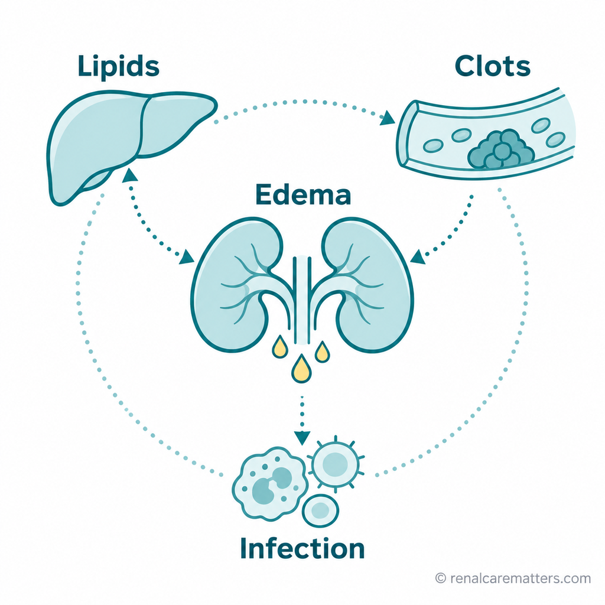
Edema, dyslipidemia, thrombosis, and infection are one physiology radiating from the leaking glomerulus.
Laboratory A 2026 atomic force microscopy study found that podocytes soften across proteinuric diseases, including human FSGS, with lower β1-integrin expression and inactivation of the mechanosensitive cofactors yes-associated protein (YAP) and transcriptional coactivator with PDZ-binding motif (TAZ). This adds a biomechanical layer to effacement, but it is laboratory evidence without therapeutic implications yet.
Classifying FSGS before treating it
FSGS is a lesion, not a diagnosis. Kidney Disease: Improving Global Outcomes (KDIGO) 2021 separates primary (immune, usually full NS with diffuse effacement), genetic, secondary (maladaptive hyperfiltration from obesity, reduced nephron mass, low birth weight; viral; drug-induced), and FSGS of undetermined cause (FSGS-UC). Guideline Practice Point 6.1.1.1: adults with FSGS who do not have NS should be evaluated for a secondary cause. Practice Point 6.2.1.1: immunosuppression should not be used in FSGS-UC or secondary FSGS. The clinical tell is that maladaptive FSGS rarely produces full NS with severe hypoalbuminemia, and electron microscopy shows segmental rather than diffuse effacement.
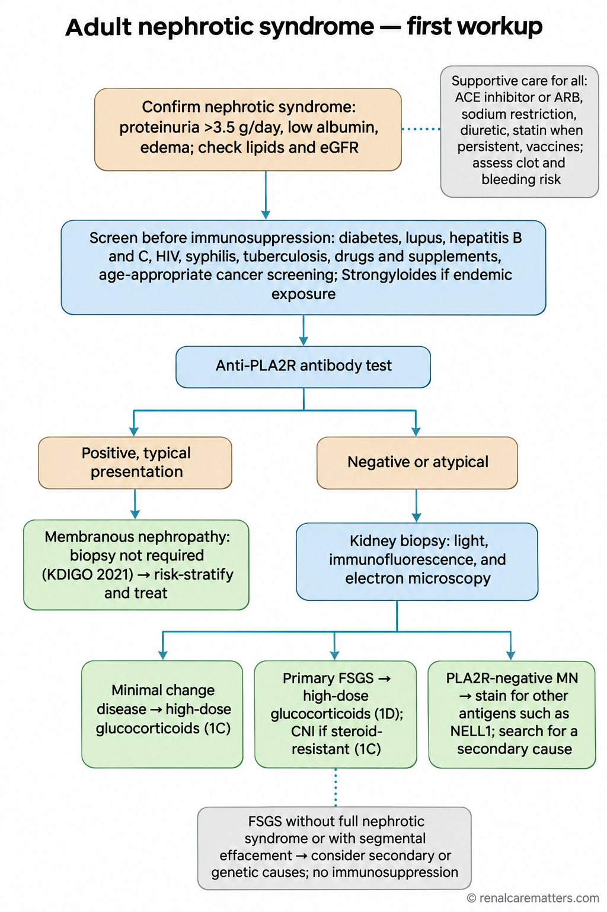
Adult nephrotic syndrome workup: quantify proteinuria and albumin, screen for secondary causes and infection, test anti-PLA2R, and biopsy unless seropositive membranous nephropathy is clinically typical. Treatment then follows the pattern.
- NS
- Nephrotic syndrome
- UPCR
- Urine protein-to-creatinine ratio
- eGFR
- Estimated glomerular filtration rate
- HIV
- Human immunodeficiency virus
- PLA2R
- Phospholipase A2 receptor
- KDIGO
- Kidney Disease: Improving Global Outcomes
- MN
- Membranous nephropathy
- MCD
- Minimal change disease
- FSGS
- Focal segmental glomerulosclerosis
- CNI
- Calcineurin inhibitor
- NELL1
- Neural epidermal growth factor-like 1
- ACE
- Angiotensin-converting enzyme
- ARB
- Angiotensin II receptor blocker
Case pearl · Kidney International 2026
Case / expert A 56-year-old woman with type 2 diabetes and biopsy-proven MCD in 2019, in remission for nearly 6 years, relapsed with florid NS. Re-biopsy showed cellular-variant FSGS with 100% effacement and an inactive (stage 4) segmental NELL1-associated MN that was absent on the 2019 biopsy. Treatment directed only at the podocytopathy (prednisone 80 mg/day) produced remission within 7 weeks. Lesson: abrupt late relapse warrants re-biopsy, and effacement out of proportion to deposits points to a coexisting podocytopathy.
Membranous nephropathy: antigen-defined disease
Since anti-phospholipase A2 receptor (PLA2R) antibodies were identified in 2009, MN has become an antigen-defined disease. Anti-PLA2R is present in roughly 70% of primary MN (60%–80% across cohorts). Thrombospondin type-1 domain-containing 7A (THSD7A) accounts for a small minority, and neural epidermal growth factor-like 1 (NELL1) is the second most common antigen, at about 5%–10% of primary MN and 15%–25% of PLA2R/THSD7A double-negative cases.
Guideline KDIGO 2021 Practice Point 3.1.1: a kidney biopsy is not required to confirm MN in patients with nephrotic syndrome and a positive anti-PLA2R antibody test. Practice Point 3.1.2: patients with MN should be evaluated for associated conditions regardless of antibody status. A negative test does not exclude PLA2R-associated MN, because antibody may be absent early or after spontaneous immunologic remission; tissue PLA2R staining defines the subtype.
Why deposits sit under the podocyte · laboratory evidence
Laboratory A 2026 translational study answered an old question: how does circulating IgG generate deposits anchored to the GBM from a podocyte membrane antigen? In cultured podocytes and HEK293 cells, serum or purified IgG from PLA2R-positive patients accelerated ADAM10/17 (a disintegrin and metalloproteinase 10/17)-dependent shedding of the PLA2R ectodomain. The effect was epitope-dependent (absent with an N-terminal-deleted receptor), complement-independent, and specific (THSD7A was not cleaved). The shed ectodomain bound collagen IV and laminin and selectively captured patient IgG; in biopsies, the ectodomain was enriched within GBM deposits while the intracellular domain stayed in the podocyte. This reconciles the serum–tissue antibody match with the subepithelial location of deposits. It is mechanistic and does not change management.
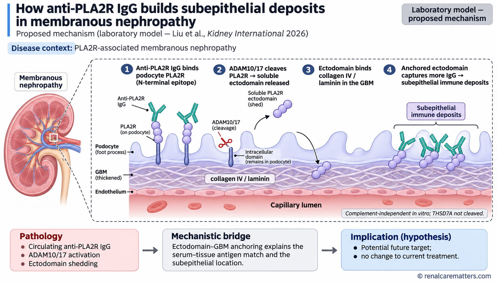
Proposed mechanism (laboratory model): anti-PLA2R IgG triggers ADAM10/17 cleavage of the PLA2R ectodomain, which lodges in the glomerular basement membrane and traps more antibody, building subepithelial deposits.
- PLA2R
- Phospholipase A2 receptor
- ADAM10/17
- A disintegrin and metalloproteinase 10 and 17
- GBM
- Glomerular basement membrane
- IgG
- Immunoglobulin G
NELL1: a serology at last, and a reason to look for a secondary cause
Observational A National Institutes of Health team developed a luciferase immunoprecipitation systems (LIPS) assay against an N-terminal NELL1 fragment. In 20 biopsy-proven NELL1-positive versus 20 PLA2R-positive/NELL1-negative sera, sensitivity was 90% (18/20) and specificity 100%, outperforming enzyme-linked immunosorbent assay (ELISA) specificity (89%). In an independent cohort of 63 MN cases, 6 were seropositive, and in 3 patients with serial samples antibody levels tracked proteinuria. The two false negatives were drawn months after biopsy, one in remission. The assay is a research tool and is not commercially available.
NELL1-associated MN carries clinical associations that change the workup: malignancy, thiol-containing drugs (alpha-lipoic acid, bucillamine, tiopronin), mercury exposure (for example, mercury-containing skin-lightening creams), sarcoidosis, and graft-versus-host disease after hematopoietic stem cell transplant. In practice, a PLA2R-negative MN biopsy should prompt NELL1 tissue staining where available and a targeted history of supplements and cosmetics.
Membranous nephropathy: risk-based immunosuppression and immunologic monitoring
Natural history sets the bar. Spontaneous remission occurs in roughly 30% of MN within 6 months of supportive therapy (KDIGO 2021 narrative), so treatment is restricted to patients at risk of progression. KDIGO estimates remission chances that fall with markers of severity: about 45% with proteinuria above 4 g/day after 6 months of conservative therapy, 34% with proteinuria above 8 g/day for more than 6 months, 17% in the upper tertiles of anti-PLA2R, and 20% with anti-PLA2R above 275 relative units (RU)/mL. A documented 20% fall in estimated glomerular filtration rate (eGFR) within 24 months carries an 84% likelihood of progression.
| KDIGO 2021 statement | Grade |
|---|---|
| Practice point (PP) 3.3.2: immunosuppressive therapy is not required with proteinuria <3.5 g/day, serum albumin >30 g/L (bromocresol purple [BCP] or immunometric assay), and eGFR >60 mL/min/1.73 m². | Practice point (ungraded) |
| PP 3.3.3: not required with NS and normal eGFR unless at least one risk factor for progression or a serious NS complication (acute kidney injury [AKI], infection, thromboembolism). | Practice point (ungraded) |
| Rec 3.3.1: with at least one risk factor for progression, use rituximab, or cyclophosphamide with alternate-month glucocorticoids for 6 months, or calcineurin inhibitor (CNI)-based therapy for at least 6 months, chosen by risk estimate. | 1B |
| PP 3.3.4: monitor anti-PLA2R at 6 months after starting therapy to evaluate response and guide adjustments. | Practice point (ungraded) |
KDIGO's risk-to-regimen map, on a base of supportive care including renin–angiotensin system (RAS) blockade: low risk, watchful waiting; moderate risk, watchful waiting, rituximab, or CNI with or without glucocorticoids; high risk, rituximab, cyclophosphamide with glucocorticoids, or CNI plus rituximab; very high risk (rapid eGFR decline or life-threatening NS), cyclophosphamide with glucocorticoids. KDIGO notes that CNI monotherapy with rapid withdrawal has a high relapse rate, and limits cumulative cyclophosphamide to about 25 g in practice (never above 36 g; at most 10 g when fertility matters). By ELISA, 2 RU/mL defines complete immunologic remission.
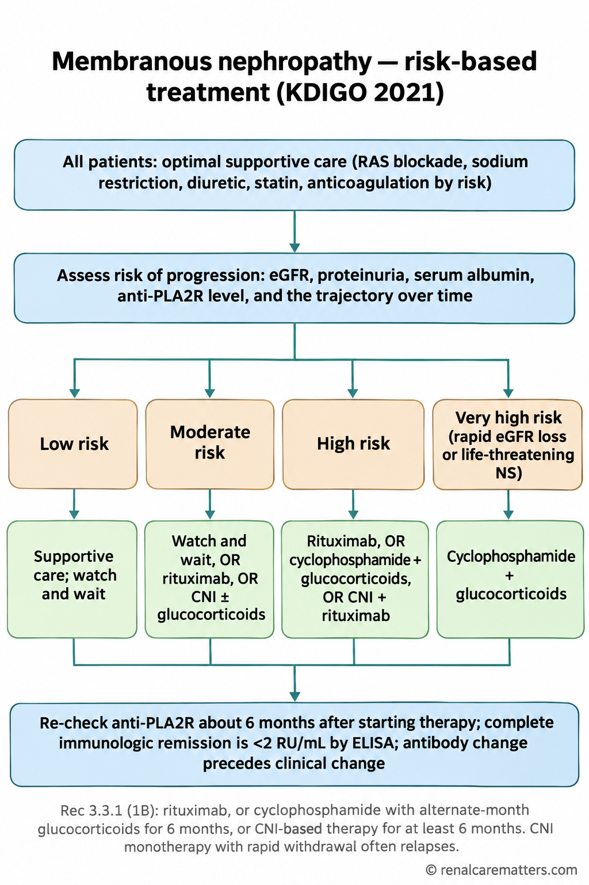
KDIGO 2021 risk-based immunosuppression for MN, with anti-PLA2R re-checked at about 6 months.
- KDIGO
- Kidney Disease: Improving Global Outcomes
- MN
- Membranous nephropathy
- RAS
- Renin–angiotensin system
- eGFR
- Estimated glomerular filtration rate
- PLA2R
- Phospholipase A2 receptor
- NS
- Nephrotic syndrome
- CNI
- Calcineurin inhibitor
- RU
- Relative units
- ELISA
- Enzyme-linked immunosorbent assay
The trials behind B-cell depletion
Randomized trial MENTOR (Membranous Nephropathy Trial of Rituximab, 2019): 130 patients with proteinuria at least 5 g/day despite at least 3 months of renin–angiotensin system blockade. Complete or partial remission at 12 months: rituximab 60% versus cyclosporine 52% (noninferior). At 24 months: 60% versus 20% (risk difference 40 percentage points, 95% confidence interval [CI] 25–55), because remissions on cyclosporine did not hold after withdrawal. Serious adverse events: 17% versus 31%.
Randomized trial MAJESTY (2026): 142 adults with primary MN randomized to intravenous obinutuzumab, a type II anti-CD20 antibody, or oral tacrolimus. Complete remission (urine protein-to-creatinine ratio [UPCR] ≤0.3 g/g with stable eGFR) at week 104: 37% versus 6% (adjusted difference 31 points, 95% CI 18–44). Complete-or-partial remission at week 104 and complete remission at week 76 also favored obinutuzumab. The hierarchical test of sustained eGFR decline of at least 30% was not significant, so later endpoints were not formally tested. Grade 3 or higher adverse events: 22% versus 19%; serious infections 3 versus 4 per 100 patient-years. Appraisal: the comparator was a CNI, which KDIGO already regards as the less durable option, so the trial establishes obinutuzumab over tacrolimus, not over rituximab. Complete remission is a surrogate, albeit a strong one in MN, and kidney survival was not shown to differ over 2 years.
Observational Not every B-cell-adjacent target works. In a 2026 single-arm study of felzartamab (anti-CD38) in 10 patients with rituximab-resistant MN, proteinuria at 12 months did not change despite deep depletion of natural killer and transitional B cells; anti-PLA2R fell transiently but never cleared. Plasma cells and CD20-positive memory cells were spared.
Defining relapse, and predicting it
KDIGO advises judging relapse by the course of albumin and proteinuria together: a rise in proteinuria after a partial remission counts as relapse only if albumin falls; if albumin never normalized, the rise is resistant disease. Anti-PLA2R typically moves before proteinuria, so measure it at remission and at suspected relapse. In the personalized medicine for membranous nephropathy (PMMN) trial substudy, immunologic relapse was defined as anti-PLA2R rising above 14 RU/mL after falling below 14.
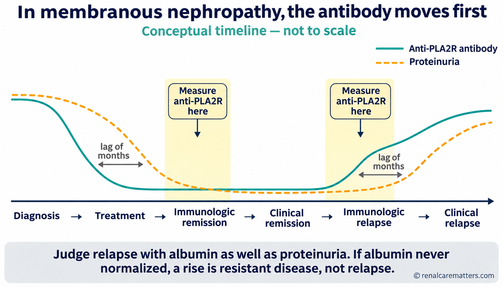
Conceptual timeline: anti-PLA2R changes months before proteinuria in remission and relapse.
- PLA2R
- Phospholipase A2 receptor
Observational B-cell reconstitution as a relapse signal (exploratory). Among 36 rituximab-treated PLA2R-positive patients in that substudy, 19 stayed in remission and 8 relapsed (2 clinical, 6 immunologic). All B-cell subsets were depleted at month 3. At month 6, relapsers had higher proportions of total CD19+ cells (0.80% vs 0.15% of lymphocytes), naïve, double-negative, and CD38+ transitional B cells. Proposed cutoffs (for example, CD19+ above 0.44% of lymphocytes) were derived and tested in the same small cohort without validation. Treat this as a hypothesis for earlier retreatment, not a monitoring standard; KDIGO itself cautions that peripheral B-cell depletion is insufficient to judge rituximab efficacy.
Anti-nephrin antibodies and the idea of autoimmune podocytopathy
From “circulating factor” to named antibody. Anti-nephrin IgG was first described in MCD in 2022. The 2024 multicenter study in the New England Journal of Medicine (357 adults, 182 children, 117 controls) found antibodies in 44% of adults with MCD (46/105), 9% with primary FSGS (7/74), and 52% of children with idiopathic NS (94/182), and rarely in other glomerular diseases. Among patients with active, untreated disease, prevalence rose to 69% (adult MCD) and 90% (pediatric idiopathic NS). Levels tracked disease activity, and immunizing mice with nephrin reproduced an MCD-like phenotype with IgG at the slit diaphragm and nephrin phosphorylation. Together these fulfill several criteria for a pathogenic autoantibody and support the term autoimmune podocytopathy.
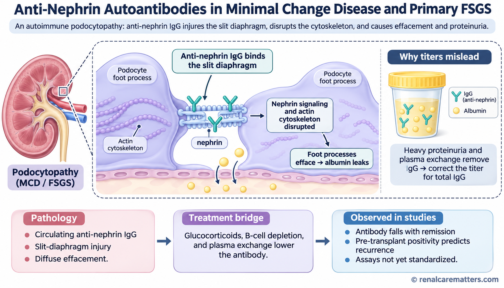
Anti-nephrin IgG at the slit diaphragm, and why heavy proteinuria and plasma exchange lower measured titers.
- MCD
- Minimal change disease
- FSGS
- Focal segmental glomerulosclerosis
- IgG
- Immunoglobulin G
Observational Steroid response. In a 2026 prospective series of 17 therapy-naïve adults with MCD, 12 (71%) were anti-nephrin positive at diagnosis; all 12 reached complete remission with undetectable antibody after 8 weeks of steroids, whereas 2 of 5 seronegative patients did not remit. Plasmablasts, naïve, and transitional B cells fell on treatment. This offers a mechanistic explanation for the glucocorticoid sensitivity of MCD.
Measuring it correctly: correct for urinary IgG loss
Case / expert Heavy proteinuria and plasma exchange strip total IgG from the circulation, so a falling titer can mean IgG loss rather than immunologic quiescence. A 2026 Japanese series (2 steroid-resistant NS, 2 post-transplant FSGS recurrences) expressed the result as an anti-nephrin-to-IgG ratio. The raw titer fluctuated between positive and negative during nephrotic-range proteinuria, while the ratio stayed positive throughout proteinuria and after plasma exchange, and both turned negative in remission. In one recurrence, the titer appeared negative after prophylactic rituximab and plasma exchange, but the ratio stayed positive and severe recurrence followed immediately. The cutoffs used (226 U/mL; 30 U/mg) are assay-specific, and n=4.
Where this stands in November 2026
Assays are not standardized, cutoffs vary by laboratory, and no guideline recommends routine testing. KDIGO 2025 (children) cites the antibody as supporting the rationale for immunosuppression and as a future biomarker. Testing is not available in routine Philippine laboratories; send-out research testing should not delay steroid therapy.
Minimal change disease in adults: the standard, and the ADAPT challenge
Guideline KDIGO 2021 Rec 5.3.1: high-dose oral glucocorticoids for initial treatment of MCD (1C). PP 5.3.2: give high-dose therapy for no longer than 16 weeks. PP 5.3.3: begin tapering 2 weeks after complete remission, for up to about 24 weeks of total exposure. PP 5.3.5: when glucocorticoids are relatively contraindicated (KDIGO lists obesity, poorly controlled diabetes, and serious psychiatric disorders), consider cyclophosphamide, a CNI, or mycophenolate mofetil (MMF) instead. Rec 5.3.1.1: for frequently relapsing or steroid-dependent MCD, use cyclophosphamide, rituximab, CNIs, or mycophenolic acid analogs (MPAA) rather than prednisone alone or no treatment (1C). The 1C grade reflects few adult randomized trials; the strength rests on large observational series and extrapolation from pediatric steroid-sensitive NS.
ADAPT (Kristensen et al., Kidney International, 2026) · full appraisal
Randomized trial Design. Open-label, multicenter, non-inferiority randomized controlled trial (RCT) across 9 Danish renal departments (2018–2025). Biopsy-proven MCD with NS (albumin below normal; albuminuria above 3 g/day or urine albumin-to-creatinine ratio [UACR] above 2200 mg/g); new-onset or relapse after at least 5 relapse-free years. Patients could start any prednisolone dose up to 14 days before randomization (40 of 67 did). Arms: prednisolone 0.5 mg/kg/day plus alfacalcidol 0.5 µg/day versus prednisolone 1 mg/kg/day, continued to remission (minimum 4 weeks), then tapered over 25 weeks; follow-up 52 weeks after remission. Primary endpoint: complete remission (UACR <300 mg/g or UPCR <400 mg/g twice) within 16 weeks; non-inferiority margin a remission rate ratio of 0.9.
ADAPT primary and dose outcomes, drawn to scale from the published values (Kristensen et al., 2026).
- ADAPT
- Active Vitamin D And Reduced Dose Prednisolone for Treatment in Minimal Change Nephropathy
- CI
- Confidence interval
Results. Remission 29/33 (88%; 95% CI 74–96) versus 31/34 (91%; 78–98); rate ratio 0.96 with a one-sided lower 95% bound of 0.84, below the 0.9 margin (P = 0.207): non-inferiority not shown. Median time to remission 28 versus 23 days (P = 0.52). Relapse 35% versus 32% (hazard ratio 1.07, 95% CI 0.52–2.19). Mean cumulative prednisolone 3742 versus 8005 mg (P < 0.001). Serious adverse events 6 events in 5 patients versus 13 events in 9 patients (P = 0.37), including 0 versus 4 infection-related admissions (one Pneumocystis pneumonia), 0 versus 2 psychiatric, 0 versus 1 thromboembolic, and 0 versus 1 femoral head osteonecrosis. Glucocorticoid Toxicity Index cumulative worsening score 51 versus 91 (46 versus 74 excluding low-density lipoprotein [LDL] cholesterol and body mass index; both P = 0.02). Two episodes of hypercalcemia occurred with alfacalcidol, managed by reducing calcium and pausing alfacalcidol for 2 weeks.
Appraisal. (1) The sample size was revised downward from 43 to 32 per arm after other data suggested higher remission rates, leaving the trial underpowered for a 10% relative margin; the observed difference is small and the confidence interval wide. (2) Open-label design biases adverse-event and quality-of-life reporting, the very outcomes favoring the low-dose arm. (3) The combined intervention cannot separate dose reduction from alfacalcidol; the antiproteinuric rationale for activated vitamin D (podocyte anti-apoptotic effects, renin suppression) is mechanistic. (4) All but 3 participants were White Danish adults; Filipino patients, who on average weigh less and face different infection exposures, were not represented. (5) Most remissions occurred early: only 6 of 67 remitted after 10 weeks, which questions the need for 16 weeks of high dose in early responders.
Bottom line for practice
Standard 1 mg/kg/day remains the guideline default (KDIGO 1C). ADAPT is hypothesis-generating support for a shared decision to use about 0.5 mg/kg/day in adults at high risk of steroid toxicity: diabetes, osteoporosis, psychiatric history, obesity, or older age. If alfacalcidol is added, check calcium at baseline and during treatment, and avoid stacking it with high-dose calcium supplements. Taper early once remission is confirmed regardless of the starting dose.
FSGS: treat only the primary form, and test genes when the phenotype fits
Guideline KDIGO 2021 Rec 6.2.2.1: high-dose oral glucocorticoids as first-line immunosuppression for primary FSGS (1D). PP 6.2.2.2: continue until complete remission, or up to a maximum of 16 weeks as tolerated. PP 6.2.2.3: responders should receive glucocorticoids for at least 6 months. PP 6.2.2.4: with relative contraindications, start a CNI instead. Rec 6.3.1.1: for steroid-resistant primary FSGS, cyclosporine or tacrolimus for at least 6 months rather than continued glucocorticoid monotherapy or no treatment (1C). PP 6.3.3.1: CNI responders should continue for at least 12 months. PP 6.3.4.1: refer patients resistant to or intolerant of CNIs to a specialized center (re-biopsy, alternatives, trials). KDIGO notes that CNI target levels for glomerular disease are unknown; titrate to proteinuria and stop if creatinine rises more than 30% and does not recover with dose reduction.
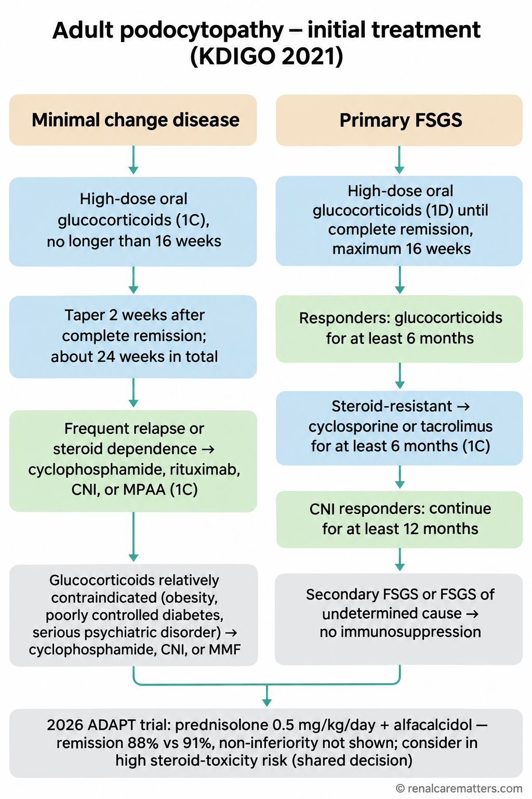
KDIGO 2021 initial treatment of adult MCD and primary FSGS, with the 2026 ADAPT result.
- KDIGO
- Kidney Disease: Improving Global Outcomes
- MCD
- Minimal change disease
- FSGS
- Focal segmental glomerulosclerosis
- CNI
- Calcineurin inhibitor
- MPAA
- Mycophenolic acid analogs
- MMF
- Mycophenolate mofetil
- ADAPT
- Active Vitamin D And Reduced Dose Prednisolone for Treatment in Minimal Change Nephropathy trial
Genetic testing. PP 6.1.2.1: genetic testing may benefit selected patients, through referral to specialized centers. The highest yield is in childhood-onset or steroid-resistant disease, a family history, syndromic features, or FSGS without full NS. In people of West African ancestry, consider apolipoprotein L1 (APOL1) high-risk genotypes.
Observational CNIs in genetic podocytopathy (Malakasioti et al., 2026). Retrospective cohort of 136 children with genetic podocytopathies from 34 centers, treated with a CNI for at least 3 months; median follow-up 42.1 months. At least partial response: 28% at 6 months and 22% at last follow-up; 71% never responded, 11% had a non-sustained response, and 18% a sustained response. No sustained responder reached kidney failure. Adjusted hazard ratios for kidney failure versus non-responders were 0.01 (sustained) and 0.08 (non-sustained). A 6-month UPCR of about 4 mg/mg best predicted kidney failure at 3 to 5 years (area under the curve [AUC] 0.74–0.76). The plausible confounder is hypomorphic variants with milder phenotypes clustering among responders. Practical reading: a time-limited CNI trial is reasonable, continued only in responders, with the 6-month UPCR as a decision point.
Children and genetics: what changed in 2025–2026
Guideline KDIGO 2025 Clinical Practice Guideline for the Management of Nephrotic Syndrome in Children replaced the pediatric chapter of the 2021 guideline. Rec 1.3.1.1 (1B): give oral glucocorticoids for 8 weeks (4 weeks daily, then 4 weeks alternate-day) or 12 weeks (6 + 6). Standard dosing is prednisone or prednisolone 60 mg/m²/day or 2 mg/kg/day (maximum 60 mg/day), then 40 mg/m² or 1.5 mg/kg (maximum 40 mg) on alternate days. Rec 1.3.2.1 (1C): do not routinely give daily glucocorticoids during upper respiratory infections in frequently relapsing or steroid-dependent NS to prevent relapse. Rec 1.3.3.1 (1B): prescribe glucocorticoid-sparing agents for frequently relapsing NS with serious steroid adverse effects and for all steroid-dependent NS; the agents (oral CNIs, cyclophosphamide, levamisole, MMF, rituximab) are listed in an unbiased order. Rec 1.4.1.1 (1C): cyclosporine or tacrolimus as initial second-line therapy for steroid-resistant NS (SRNS), with genetic testing recommended for all children with SRNS. The International Pediatric Nephrology Association (IPNA) recommendations for steroid-sensitive (2023) and steroid-resistant (2020) NS remain the detailed companion documents.
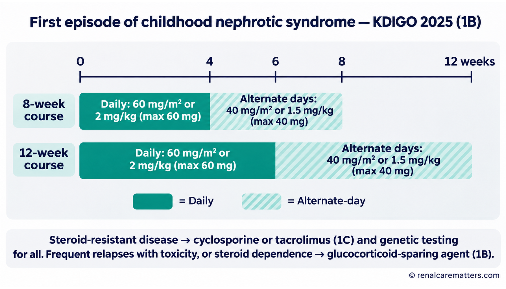
KDIGO 2025 first-episode glucocorticoid courses in children: 8 or 12 weeks (1B).
- KDIGO
- Kidney Disease: Improving Global Outcomes
Predicting steroid response at onset · research only
Observational A genome-wide association study (GWAS) of 1,997 children with NS (994 discovery, 1,003 replication) and 3,558 ancestry-matched controls confirmed that steroid-sensitive NS (SSNS), unlike SRNS, is an human leukocyte antigen (HLA) class II-associated immune disease: loci in HLA-DQB1, HLA-DRB1, and HLA-DQA1, plus the immune-regulatory gene CLEC16A. The haplotype DRB1*07:01∼DQA1*02:01∼DQB1*02:02 carried about 4-fold odds of SSNS. A model combining HLA haplotype, a polygenic risk score (PRS), and age at onset discriminated SSNS from SRNS with an AUC of 0.68–0.70 (accuracy 67%–71%). The accompanying commentary stresses that this is modest discrimination, that the cohorts were mainly African, European, and South Asian, and that East Asian and other populations still need validation. It is not a clinical decision tool; children with typical NS still start steroids.
The same commentary summarizes anti-nephrin prevalence of up to 80%–90% in childhood SSNS, about 14% in non-genetic SRNS, and about 2% in monogenic disease, which is why the antibody is attractive as a future marker of immune-mediated, treatable disease.
Podocyte genes: NPHS2 and NPHS1
Observational Biallelic NPHS2 (podocin) variants are the most common monogenic cause of SRNS. In 208 individuals, the largest single cohort, median onset was 2.75 years (range 0–30). Later onset clustered with compound heterozygosity for p.R229Q (including in trans with novel p.E281K), homozygous p.V180M, and select p.R138Q compound genotypes. Structural modeling suggested pathogenic missense variants cluster at oligomer interfaces, with earlier-onset variants nearer the transmembrane plane; this awaits experimental confirmation. Laboratory For NPHS1 (nephrin), a 2026 letter modeling ClinVar variants found that most pathogenic missense variants are buried (55/81) and act through misfolding or trafficking failure, with 10/81 disrupting conserved disulfide-bonded cysteines. For clinicians, the takeaway is practical: a genetic diagnosis predicts steroid resistance and very low post-transplant recurrence risk, and spares futile immunosuppression.
For the pediatric chronic kidney disease (CKD) pathway, growth, and transition, see CKD in children and young adults.
Complications: thrombosis, infection, lipids, AKI, and diuretic resistance
Thromboembolism
Mechanism. Urinary loss of antithrombin and other small anticoagulant proteins, hepatic overproduction of fibrinogen and factors V and VIII, platelet hyperaggregability, hemoconcentration from diuresis, and immobility. MN carries the highest venous risk among primary causes, and risk rises steeply as albumin falls.
Guideline KDIGO 2021 PP 1.7.1: full anticoagulation for thromboembolic events in NS; prophylactic anticoagulation when thromboembolic risk exceeds the patient-specific risk of serious bleeding. PP 3.4.5: in MN, base prophylaxis on estimated thrombotic and bleeding risk. KDIGO's algorithm (developed for MN; its value in other NS is unknown) uses albumin thresholds that depend on the assay: consider venous prophylaxis below 25 g/L by bromocresol green (BCG), which corresponds to about 20 g/L by BCP or immunonephelometry, and consider arterial risk (aspirin) below 32 g/L (BCG) or 30 g/L (BCP). Bleeding risk is estimated with the University of North Carolina (UNC) glomerulonephritis (GN) tools calculator, which derives from a decision analysis (Lee et al., 2014) showing that the net benefit of prophylaxis depends jointly on albumin and bleeding risk. Practical points from the same figure: aspirin alone does not prevent venous thromboembolism; glucocorticoids increase thrombotic risk, so do not omit prophylaxis when starting prednisone; and warfarin control is erratic in NS, so start low-molecular-weight heparin (LMWH) and fold in warfarin, or use low-dose low-molecular-weight heparin plus aspirin for about 3 months while proteinuria declines. Direct oral anticoagulants are increasingly used, but trial evidence in NS is limited and albumin binding alters their pharmacokinetics.
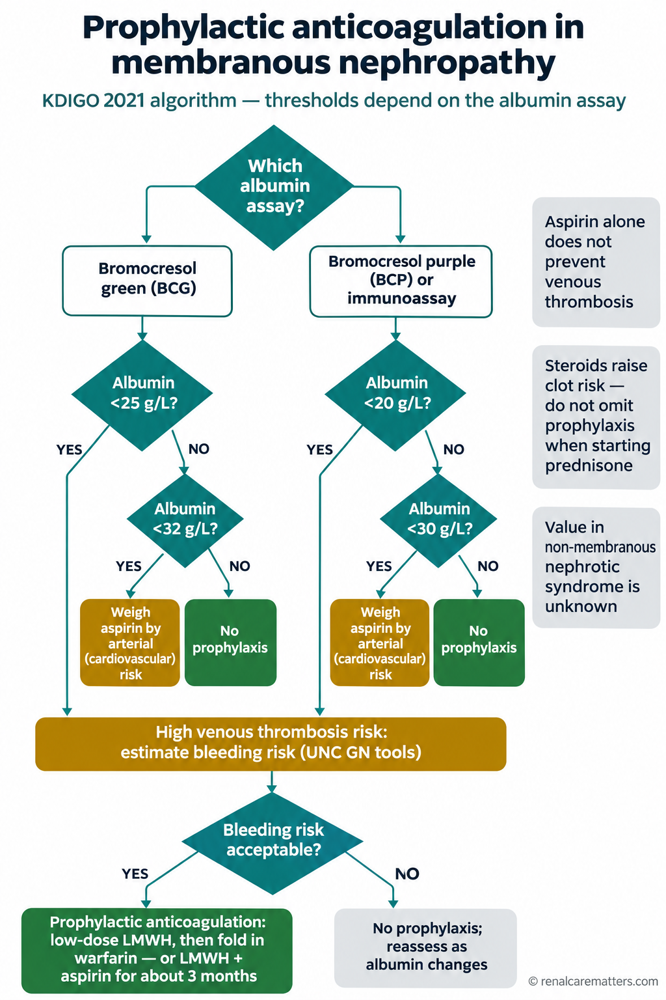
KDIGO 2021 anticoagulation algorithm for MN, with assay-specific albumin thresholds.
- KDIGO
- Kidney Disease: Improving Global Outcomes
- MN
- Membranous nephropathy
- BCG
- Bromocresol green
- BCP
- Bromocresol purple
- UNC
- University of North Carolina
- GN
- Glomerulonephritis
- LMWH
- Low-molecular-weight heparin
Infection
Urinary loss of IgG and complement factor B, edema fluid as a culture medium, and immunosuppression explain the risk of cellulitis, pneumococcal peritonitis, and opportunistic infection. Guideline KDIGO 2021 PP 1.8.1: pneumococcal vaccine; influenza vaccine for patients and household contacts; recombinant zoster vaccine. PP 1.8.2: screen for tuberculosis, hepatitis B and C, HIV, and syphilis as clinically appropriate (hepatitis B core antibody and surface antigen are mandatory before rituximab). PP 1.8.3: consider Strongyloides hyperinfection in patients from endemic tropical areas who have eosinophilia and raised IgE; in endemic settings such as rural Philippines, many clinicians give empiric ivermectin before high-dose steroids (expert practice, not a KDIGO statement). PP 1.8.4: consider trimethoprim–sulfamethoxazole prophylaxis with high-dose prednisone or other immunosuppression; ADAPT's one Pneumocystis pneumonia occurred in the high-dose arm.
Dyslipidemia
Hepatic apolipoprotein B overproduction and reduced lipoprotein lipase activity raise LDL cholesterol and lipoprotein(a). Short-lived steroid-sensitive disease may not need a statin, but persistent NS behaves like a high cardiovascular-risk state. See Dyslipidemia 2026.
AKI and diuretic resistance
AKI in NS has several causes: overdiuresis in underfilled patients, interstitial edema, renal vein thrombosis, nonsteroidal anti-inflammatory drugs (NSAIDs), and, in older adults with MCD, acute tubular injury. Loop diuretics are highly albumin-bound; reduced delivery and possible binding to filtered albumin in the tubule may blunt their effect, and ENaC activation adds distal sodium retention. Escalate in steps: sodium restriction, twice-daily loop diuretic, then sequential blockade with a thiazide or amiloride (the latter directly targets plasmin-activated ENaC). Albumin co-infusion is reserved for severe hypoalbuminemia with refractory edema or hypotension, given inconsistent benefit.
Recurrence after kidney transplantation
Diffuse podocytopathy (primary FSGS/MCD). Recurrence is described in about one-third of transplant recipients, more often when genetic testing is negative and the native disease showed full NS with diffuse effacement, and in up to 90% when a previous graft was lost to recurrence. Observational Pre-transplant anti-nephrin antibodies were specific predictors of recurrent diffuse podocytopathy in a 2024 study, and IgG colocalizing with nephrin in a punctate pattern on allograft biopsy supports the diagnosis.
Case / expert Serial monitoring guiding a second transplant (Fernandez et al., 2026). A 33-year-old man with genetics-negative MCD progressing to FSGS and kidney failure had strongly positive anti-nephrin antibodies (>1000 U/mL; positivity 139 U/mL) 4 days before a living-related transplant, and recurrent NS from postoperative day 1. Plasma exchange and obinutuzumab were associated with antibody falling to undetectable levels, although graft function later declined with scarring and mixed rejection. A second, pre-emptive living-unrelated transplant was performed with antibody undetectable at transplant, and proteinuria at day 70 was 0.3 g/g. Single case, so association rather than proof, but it illustrates the concept of transplanting in immunologic remission.
MN. KDIGO estimates recurrence risk by antigen status: high (about 50%) when PLA2R antibody persists at transplantation, low (about 10%) when it has disappeared, and intermediate (about 30%) when the antigen is unknown, in which case staining the native biopsy for PLA2R is worthwhile. Rituximab is effective for recurrent MN with proteinuria above 1 g/day.
See Kidney transplant for the broader evaluation pathway.
Bedside tools: remission status, albumin-assay thresholds, steroid exposure
Three calculators for the decisions this guide discusses. They do arithmetic on guideline definitions; they do not replace clinical judgment, and nothing is sent or stored.
Complete remission: proteinuria <0.3 g/day (UPCR <300 mg/g). Partial: 0.3–3.5 g/day with at least a 50% fall from baseline. Definitions vary by disease and trial (ADAPT used UACR <300 mg/g or UPCR <400 mg/g; MAJESTY used UPCR ≤0.3 g/g with stable eGFR). In MN, judge relapse with albumin as well as proteinuria.
Thresholds from the KDIGO 2021 algorithm, developed for MN; its value in other NS is unknown. Below threshold means consider prophylaxis after a bleeding-risk estimate (UNC GN tools), not start automatically. Ask your laboratory which albumin method it uses.
Arithmetic only: full dose × days, plus a linear taper (half the starting dose × taper days). Real tapers are stepwise. For context, ADAPT's mean totals were 3.7 g (0.5 mg/kg/day arm) and 8.0 g (1 mg/kg/day arm). For equivalent doses across steroids, use the converter below.
Practicing in the Philippines
- Anti-PLA2R serology: availability, turnaround, and cost vary by institution, and some laboratories send samples out. Confirm the method (ELISA versus indirect immunofluorescence) and the cutoffs before using it to forgo a biopsy or to define immunologic remission (2 RU/mL by ELISA per KDIGO). Check with your center.
- NELL1 and anti-nephrin: research assays only; not available locally as of November 2026. Request NELL1 tissue staining from your renal pathology service if PLA2R tissue staining is negative.
- Rituximab and obinutuzumab: access, biosimilar availability, and Philippine Health Insurance Corporation (PhilHealth) or health maintenance organization (HMO) coverage for glomerular disease vary; verify with your hospital pharmacy and payer before planning a regimen. Cyclophosphamide with glucocorticoids remains a KDIGO-endorsed (1B) option for high-risk MN where B-cell therapy is not accessible.
- Infection context: screen for hepatitis B and tuberculosis before immunosuppression, and consider empiric Strongyloides treatment in patients from endemic areas (KDIGO PP 1.8.3).
- Mercury and NELL1: ask about skin-lightening creams and imported cosmetics in PLA2R-negative MN.
- Genetic testing: panels are usually sent abroad; prioritize children with SRNS (KDIGO 2025) and adults with familial or syndromic FSGS.
Evidence grade at a glance
| Claim | Evidence type | Grade or certainty |
|---|---|---|
| Rituximab, cyclophosphamide, or CNI for MN at risk of progression | Guideline (KDIGO 2021) | 1B |
| Rituximab sustains MN remission better than cyclosporine at 24 months (MENTOR) | RCT, n=130 | Moderate-high |
| Obinutuzumab achieves more complete remission than tacrolimus at 104 weeks (MAJESTY) | RCT, n=142 | Moderate (surrogate endpoint; CNI comparator) |
| High-dose glucocorticoids first-line for adult MCD | Guideline (KDIGO 2021) | 1C |
| Half-dose prednisolone plus alfacalcidol for adult MCD (ADAPT) | Open-label RCT, n=67 | Low (non-inferiority not shown) |
| High-dose glucocorticoids first-line for primary FSGS | Guideline (KDIGO 2021) | 1D |
| CNI for steroid-resistant primary FSGS | Guideline (KDIGO 2021) | 1C |
| 8 or 12 weeks of glucocorticoids for first childhood NS | Guideline (KDIGO 2025) | 1B |
| Anti-nephrin antibodies mark and likely cause autoimmune podocytopathy | Cohort + animal model | Moderate for association; low for clinical use |
| NELL1 LIPS serology: sensitivity 90%, specificity 100% | Diagnostic study, n=40 validation | Low (research assay) |
| B-cell subsets at month 6 predict MN relapse after rituximab | Trial substudy, n=27 analyzed | Very low (exploratory) |
| Anti-nephrin-to-IgG ratio corrects for urinary IgG loss | Case series, n=4 | Very low |
| CNI response in genetic podocytopathy predicts kidney survival | Retrospective cohort, n=136 | Low |
| HLA/PRS model predicts steroid response in children (AUC 0.68–0.70) | GWAS, n=1,997 cases | Low for clinical use |
| Anti-PLA2R IgG drives ectodomain shedding that seeds GBM deposits | Laboratory | Mechanistic |
KDIGO grades are quoted exactly (1 = recommend, 2 = suggest; A–D = high to very low certainty). Practice points are ungraded expert guidance. Certainty labels for individual studies are the author's appraisal, not a formal GRADE assessment.